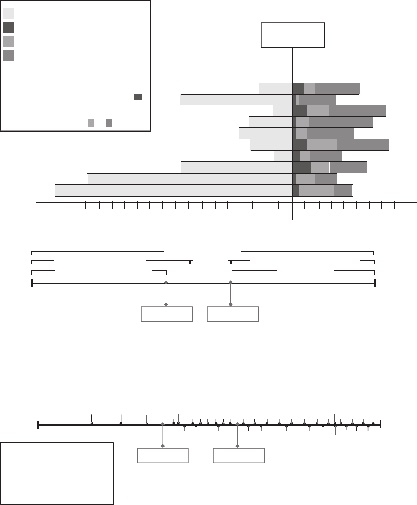
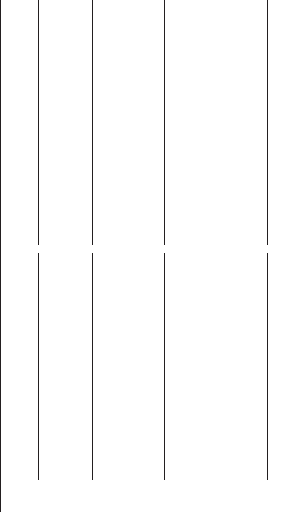
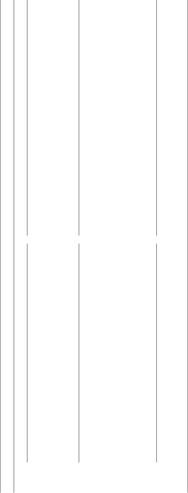

Toward a Theory of Discontinuous Career Transition:
Investigating Career Transitions Necessitated by Traumatic Life Events
J. Michael Haynie
Syracuse University
Dean Shepherd
Indiana University Bloomington
Career researchers have focused on the mechanisms related to career progression. Although less studied,
situations in which traumatic life events necessitate a discontinuous career transition are becoming
increasingly prevalent. Employing a multiple case study method, we offer a deeper understanding of such
transitions by studying an extreme case: soldiers and Marines disabled by wartime combat. Our study
highlights obstacles to future employment that are counterintuitive and stem from the discontinuous and
traumatic nature of job loss. Effective management of this type of transitioning appears to stem from
efforts positioned to formulate a coherent narrative of the traumatic experience and thus to reconstruct
foundational assumptions about the world, humanity, and self. These foundational assumptions form the
basis for enacting future-orientated career strategies, such that progress toward establishing a new career
path is greatest for those who can orientate themselves away from the past (trauma), away from the
present (obstacles to a new career), and toward an envisioned future career positioned to confer meaning
and purpose through work.
Keywords: careers, coping, identity, entrepreneurship, disability
Aaron always wanted to be a Marine. He enlisted at age 18, and
he wore his uniform proudly. Aaron lived the ideals of the Marine
Corps, and the organization rewarded him with quick promotions
as a result. At age 24, he went to war. Just short of his 25th
birthday, Aaron found himself critically wounded and in a hospital
fighting for his life, the victim of a roadside bomb. It was at that
moment, Aaron reports, that he lost faith in humanity. His trauma
was made worse by his realization that because of his injuries, his
career as a Marine was over.
Aaron’s experience represents a traumatic life event, one that is
extraordinary, evokes fear and helplessness, and is experienced as
a threat to survival (American Psychiatric Association [APA],
1994). The psychological impact of an experience like Aaron’s is
typically profound; the traumatic event serves to shatter an indi-
vidual’s closely held assumptions about the self, the external
world, and the relationship between the two (Janoff-Buhlman,
1992; Magwaza, 1999). Aaron’s trauma was compounded by the
realization that his injuries would effectively terminate a career
that he valued highly. For Aaron the linkage between career and
identity was particularly salient and pervasive, as a consequence of
military socialization practices replete with symbols, artifacts, and
ceremony designed to cultivate a conception of self-identity that is
intertwined with the military organization (Budd, 2007; Hale,
2008; Lande, 2007). Aaron’s career as a Marine evolved to be-
come the foundation of his own self-narrative, the story he told to
himself and the world about who he was and where he belonged
(Baumeister, 1991; Neimeyer, 2004, 2006). To understand the
power of this linkage, consider that in the years preceding his
injury, Aaron told us, he would introduce himself to new people by
saying, “I’m Aaron; I’m a Marine.” After his injury, Aaron re-
ported that he would not introduce himself to new people, because
he “didn’t know what to say.” The career that informed his most
closely held beliefs about who he was had been terminated the
instant that bomb exploded in Iraq.
Investigating careers informs the nature of the relationships
between individuals, organizations, and society (Hughes, 1958;
O’Mahony & Bechky, 2006). Traditionally, career research has
focused on internal labor markets and career progression, exam-
ining how individuals move within organizations and through a
series of jobs, typically with increasing levels of authority and
responsibility (De Vos, Dewettinck, & Buyens, 2008; Owan,
2004). More recently, career research has acknowledged the
prevalence of interorganizational mobility (Arthur, Khapova, &
Wilderom, 2005; Arthur & Rousseau, 1996; Valcour & Tolbert,
2003), stressing the importance of the external labor market
(Cappelli, 1999; Hall & Mirvis, 1995; Sullivan & Arthur,
2006). Although this research has provided considerable insight
into the enablement of career transitions, there has been less
focus in the new careers literature on career constraints (Arnold
& Cohen, 2008) and on how individuals adapt to new careers
(Savickas, 2002).
The physical and psychological consequences of Aaron’s
trauma represent a substantial career constraint, and his career
transition will require considerable personal and role development.
Personal development involves altering his frame of reference,
values, and other identity-related attributes (Nicholson, 1984) and
This article was published Online First November 22, 2010.
J. Michael Haynie, Department of Entrepreneurship and Emerging En-
terprises, Whitman School of Management, Syracuse University; Dean
Shepherd, Kelley School of Business, Indiana University Bloomington.
We thank Melissa Cardon and Charles Murnieks for their comments on
earlier versions of this paper.
Correspondence concerning this article should be addressed to J. Michael
Haynie, Department of Entrepreneurship and Emerging Enterprises, Whitman
School of Management, Syracuse University, 721 University Avenue, Syra-
cuse, NY 13244. E-mail: jmhaynie@syr.edu
Journal of Applied Psychology © 2010 American Psychological Association
2011, Vol. 96, No. 3, 501–524 0021-9010/10/$12.00 DOI: 10.1037/a0021450
501

is required because Aaron’s traumatic experience shattered his
fundamental assumptions of the world, others, and self (APA,
1994). Role development involves altering (or creating) the re-
quirements of the new career to match his needs (Nicholson, 1984)
and is required because Aaron’s injuries terminated opportunities
in the internal labor market and because he faced considerable
obstacles to interorganizational mobility, given his highly special-
ized (i.e., military-related) knowledge and skills. Although we
have a growing understanding of how people cope with traumatic
events in their personal and family lives (Benight, Swift, Sanger,
Smith, & Zeppelin, 1999; Bonanno, 2004), the impact of these
situations on careers is less understood. Indeed, Nicholson (1984)
noted that investigating the mechanisms important in such extreme
situations may provide an opportunity for scholars to gain a deeper
understanding of how career transitions are experienced and man-
aged, which can direct career research in a way that enhances its
value (Arnold & Cohen, 2008). Therefore, our purpose in this
study was to consider the lived experiences of careers (Cohen,
Duberley, & Mallon, 2004) in the context of individuals facing
discontinuous career transitions necessitated by traumatic life
events. As such, we adopt a definition of career as “the unfolding
sequence of a person’s work experience over time” (Arthur &
Rousseau, 1996, p. 6). Our research aim was to develop a theo-
retical framework that informs how individuals experience and
manage such discontinuous transitions.
It is also important to briefly highlight the practical relevance of
this research. Aaron’s situation is extreme, based on its wartime
context, but the unfortunate truth is that the discontinuous nature of
his transition is not uncommon; instead, it is a reality faced by a
large and growing population of individuals across the globe. For
example, in 2008, more than 1.2 million workers in the United
States suffered serious injuries in the workplace that required
significant time (more than 20 days) away from work (U.S. Bureau
of Labor Statistics, 2008). The rate of major injury in the work-
place is similar in the United Kingdom, where 105 major injuries
per 100,000 workers were reported to the Department of National
Statistics in 2008 (National Statistics, 2009). Further, research
suggests that these statistics significantly underrepresent the prev-
alence of workplace injury because many injuries go unreported
(Probst, Brubaker, & Barsotti, 2008). Although it is difficult to
determine from available statistics what percentage of these indi-
viduals are forced to transition to new careers as a result of their
injuries, available data do imply that a significant percentage face
discontinuous transitions. For example, almost 18% of those in-
jured in U.S. workplaces suffered injuries that resulted in enduring
physical or mental impairment (U.S. Bureau of Labor Statistics,
2008). In the United Kingdom, almost 55% of the major injuries
reported in the workplace were musculoskeletal disorders, which
are typically both enduring and debilitating. Further, in both the
United States and the United Kingdom, the prevalence of these
major injuries is greatest in skilled trades (i.e., construction, com-
mercial fishing, manufacturing) in which physical limitations due
to injury are most likely to slow or terminate career progression
(National Statistics, 2009; U.S. Bureau of Labor Statistics, 2008).
This is why such research is important on a larger scale.
Contemporary advances in medical technology have resulted in
an unprecedented number of individuals surviving major combat
injuries. However, a consequence of this otherwise positive out-
come is a situation characterized in the popular press as a “social
and economic tsunami” that will overwhelm the ability and re-
sources of the public sector for a generation. Experts now suggest
that close to 30% of those who served in the recent conflicts in Iraq
and Afghanistan will live out their lives with enduring physical
and/or psychological disabilities attributable to their military ser-
vice. Given that 2.5 million individuals from the United States and
United Kingdom alone have served in these combat zones in the
past decade, this translates to a population of upwards of 650,000
individuals possibly facing discontinuous career transitions neces-
sitated by trauma. Unfortunately, this number will continue to
increase in the coming decades.
As prior research has not explored career responses to traumatic
life events, we adopt a multiple case study approach in this article
to develop an emerging theory about the mechanisms that are
important in this type of transition. As Eisenhardt and Graebner
(2007) suggested, building an emerging theory from rich data
sources is “one of the best [if not the best] bridges from rich
qualitative evidence to mainstream deductive research” (2007, p.
25). We analyze across cases to identify emerging conceptual
insights (Brown & Eisenhardt, 1997), and as suggested by Yin
(2003a, 2003b), we contrast cases of individuals who transition
well with cases of those who transition less well.
1
Based on
similarities within and differences across the categories of cases, a
model emerges that informs the mechanisms of discontinuous
career transitions in response to traumatic life events.
We focus on 10 cases, each of which is based on a U.S. military
member who experienced combat trauma and who was subse-
quently discharged from military service when his injuries made it
impossible to perform his assigned work role. Our sample size is
consistent with that of other theory-building studies employing the
multiple case method (Brown & Eisenhardt, 1997 [9 cases]; Eisen-
hardt & Graebner, 2007 [12 cases]). The nature and context of our
cases are very similar: For each case, we (a) consider and capture
the individual’s career progression and life course prior to the
transition, (b) specifically identify the impetus for the transition
and capture the career and psychological implications of his trau-
matic event, and (c) ensure that the transition is important and
ongoing (each individual planned on a military career and was
progressing well to that end, and each faced constraints in terms of
his path-dependent mobility and progression).
2
Finally, with re-
gard to career-transition strategy, each individual had enrolled in a
vocational retraining program focused on entrepreneurship. This
similarity across cases provided a common context in terms of the
discontinuous nature of the transition and also provided an es-
poused identity and career “standard” against which we could
consider career-orientated cognitions, behaviors, and outcomes
related to how each individual experienced and managed the
1
Our approach for assessing the individual’s progress toward a new
career path for each case is described in more detail later in the article.
2
Intent to pursue a military career prior to trauma was based on
self-reports to the authors. Career progress was based on reviews of each
individual’s military performance reports (for the 3-year period prior to
their trauma experience). This review was conducted by an experienced
military officer who indicated to the authors that each participant was
positioned for a successful military career. Limitations on path-dependent
mobility are attributed to involuntary separation from the military (dis-
charge) as a consequence of trauma.
502
HAYNIE AND SHEPHERD
transition process. Our induction from these cases provides in-
sights both into how individuals experience a discontinuous career
transition in response to trauma and into the mechanisms important
for those individuals who have transitioned well in terms of
constructing and executing new career paths.
Sample, Method, and Data Analysis
Cases
Each individual (represented by a case) applied for and was
selected to participate in a career retraining program in entrepre-
neurship. The training program was specifically designed for mil-
itary personnel who had experienced combat injuries and, as a
result of those injuries, had been discharged from military service.
The 14-month program consisted of both online and resident
training as well as ongoing mentorship and support. There were
107 applicants for the training program, and 25 applicants were
selected to receive the training. Selection for the training program
was based on an extensive application survey, external recommen-
dations, and interviews. The selection criteria for the program
included those measures typical of competitive education pro-
grams, including strength of recommendation letters, past aca-
demic success, personal statements, and interviews. From those
who completed the training, the researchers then selected 10 cases
for this study. As conventional when using theoretical sampling,
we selected two groups of cases that included contrasting out-
comes (Yin, 2003a, 2003b). Our sample included those who have
transitioned “well” into new careers (five individuals) and those
who have transitioned “less well” (five individuals). Our purpose
in this research informed the cases we selected. As Eisenhardt and
Graebner (2007) noted, “Theoretical sampling of single cases is
straightforward. They are chosen because they are unusually re-
velatory, extreme exemplars, or opportunities for unusual research
access” (p. 27). Each of these sampling logics applies to the cases
selected for this study.
First, these cases are well positioned to confer insights into the
relationships among constructs important to this study, because we
were able to identify clearly that each participant had experienced
a traumatic life event that necessitated a career transition. The
severity of the physical and psychological trauma experienced by
the participants was also generally uniform in nature across all
cases: Seven of the 10 participants were injured as a direct or
indirect consequence of some type of improvised explosive device,
and three suffered gunshot wounds. To document and support the
determination that each participant had experienced a traumatic
life event that necessitated a career transition, we gathered multiple
sources of data, including documentation supporting the individ-
ual’s application to the program (e.g., military discharge paper-
work, letters of support, application essays, medical disability
determination) and self-reports and reports from others (caregiver
interviews, participant interviews, online journaling). Further, each
participant was evaluated by a medical evaluation board (MEB),
and we were able to access the findings from these evaluations
through the participants. The MEB is composed of a panel of
military physicians and mental health providers who review each
case to determine (a) if the individual’s disability is directly related
to his military duties and (b) if that condition precludes the
individual from reasonably performing in his assigned work role in
the future. For each case in this study, the MEB determined that
the individual’s medical condition was a direct consequence of his
work role and that the condition would dictate termination of his
military career.
Second, we were assured that each individual’s career transition
was both important and ongoing. All individuals around whom the
cases were built were within 3 years of being discharged from
military service as a result of their combat trauma. This is impor-
tant because it ensures that the career-transition process was on-
going throughout the period of data collection for each individual.
Further, each participant expressed aspirations for entrepreneur-
ship as a postmilitary career, thereby articulating an identity stan-
dard against which to consider progress (Burke, 1991). We se-
lected a sample of cases based on an assessment of the
participants’ progress toward constructing and executing new ca-
reer paths in response to trauma-induced career transitions. These
cases were chosen based on data (e.g., progress reports, e-mails,
mentorship, interviews) that provided insight into the progress of
their career transitions, which were accumulated over a 24-month
period after the conclusion of the retraining program.
Third, over a 3-year period we were granted uncommon access
by the participants (and other close caregivers to the participants)
to information regarding their past career information, the details
related to their trauma, and their ongoing experiences with transi-
tioning from military to civilian life. Because there was a high
level of trust between each participant and the author team, the
participants were willing to share their deepest and most personal
feelings regarding their trauma and transitions with us for the
purposes of this research.
Finally, we suggest that the sample is well positioned to confer
insights into the relationships among constructs important to this
study because the military’s institutionalized socialization tactics
created a group of individuals who are exceedingly similar with
regard to their values, beliefs, and overall worldviews. This fact
conferred to us a unique opportunity to draw conclusions and
identify conceptual insights that we could more confidently attri-
bute to the dynamics of the transition process, as opposed to other
individual differences. This last point is important and warrants a
brief discussion.
Research demonstrates that for highly specialized voca-
tions—or situations in which organizations are situated in dy-
namic, novel, and uncertain environments—organization-specific
socialization processes are enacted to create person–organization
fit (Kristof, 1996). Socialization processes employed to create fit
can generally be described as being situated along a continuum of
tactics, anchored at one end by institutionalized approaches that
are designed to foster loyalty and a collective identity based on
shared norms, values, and beliefs and at the other end by individ-
ualized approaches that are positioned to encourage innovation and
a strong sense of self. Military socialization tactics are almost
exclusively institutionalized, the goal being to create an individual
whose conception of self is largely defined by the organization.
Such extreme socialization practices arguably characterize an ap-
proach to the management and development of human capital that
is efficient, effective, and necessary, given the extreme mission of
a military organization. Put simply, the more strongly an individ-
ual internalizes the identity of “soldier,” the more likely that
individual will act like a soldier under conditions of stress and
duress (i.e., conditions characteristic of a combat environment). As
503
THEORY OF DISCONTINUOUS CAREER TRANSITION

an illustration, consider the response of a senior U.S. Marine Corps
officer when we asked why he was so certain that his young
Marines would react to a hypothetical situation in a particular way:
“They’ll do what I tell them to do because they’re Marines.”
However, while such extreme socialization serves the needs of a
combat force, it is mutually exclusive with the development of a
strong sense of “individual self.” We suggest that the fact our cases
shared this common socialization experience represents a unique
research opportunity. It allowed us to generate insights that we can
more confidently attribute to the transition process rather than to
other individual differences, such as considerable heterogeneity in
prior career experiences and culture. In the end, for the reasons
cited above, we suggest that our sample was positioned well to
offer new insights into the dynamics of discontinuous career
transitions as responses to traumatic life events. In the next section,
we describe our data collection efforts.
Data Collection
The data collected to build each case are extensive and dynamic
and include multiple converging sources across multiple time
intervals.
3
These data comprise self-reports (e.g., interviews, ques-
tionnaires, personal journal entries, telephone and e-mail corre-
spondence with training program staff), relevant other-reports
(e.g., interviews with spouses and caregivers and reports from
professional supervisors and/or military commanders), and archi-
val data (e.g., official military performance reports and medical
disability determinations). In Figure 1a, we demonstrate the voca-
tional life courses for the study participants as anchored by their
combat trauma. Each individual is represented by a horizontal bar.
The bar to the left of the combat trauma represents the length of
military service and depicts when the individual was deployed to
combat. The period of active military service varied from 18 years
and three combat deployments (Bart) to 24 months and one de-
ployment (Brendan). The bar to the right represents the period of
time after the traumatic event and is segmented based on periods
of postinjury hospitalization (dark shading), the pretraining period
(light shading), and the posttraining period (moderate shading).
The greatest span of time for any individual between combat
trauma and the start of the vocational training program was 36
months (Bob), and the shortest was 11 months (Andrew).
To build each case, we started with the individual’s application
to the entrepreneurship training program. The application and
associated documentation included information about each indi-
vidual prior to and immediately after the trauma. These materials
provided (a) basic demographic information (including age, gen-
der, ethnicity, and educational background); (b) military career
information (years in service, number of combat tours, rank,
awards, training, and official military performance reports for a
3-year period prior to the trauma); (c) documentation as to the
nature and extent of the combat injury; (d) letters of recommen-
dation to support the individual’s application to the training pro-
gram from former commanding officers, fellow soldiers or Ma-
rines, caseworkers (mostly from the Veterans’ Affairs Hospital),
and/or professional supervisors; and (e) extensive responses to
application questions that required the individual to describe his
current situation, future goals, motivation to enter the program, and
reasons for pursuing entrepreneurship as a future career.
Second, the data compiled for each case included transcriptions
of all correspondence between the individual and the staff of the
training program before, during, and 24 months after the formal
conclusion of the training program. These data primarily consisted
of e-mails (mean number of e-mails was 12 per person) and also
included notes based on telephone and in-person conversations
(mean number of phone conversations was 17 per person, and the
mean number of in-person conversations was five per person).
Also included in these data were transcriptions of the individuals’
reflections and responses to questions about their goals, fears,
aspirations, and motivations for entrepreneurship as a career,
which were collected from their online journals. Online journaling
was a required component of the training program for 30 days
prior to the commencement of the training program.
The third source of data was semistructured interviews con-
ducted by the first author with each individual (and caregiver when
available). The interviews were conducted approximately 16
months after the participants had completed the formal component
of the entrepreneurship training program (e.g., coursework). Given
the role and purpose of the interview within the larger context of
our data collection efforts, we determined that it was important to
allow time to pass following the training program, so the individ-
uals could experience entrepreneurship as a career. We conducted
seven of the 10 interviews in person and the remaining three over
the phone. All interviews were captured on audiotape and were
subsequently transcribed. Our interview protocol was used as a
guide only. The interview revolved around four themes: (a) a focus
on the individual’s motivations, goals, feelings, and aspirations
associated with joining the military; (b) a retelling of being sent to
combat and the traumatic event that led to his disability and career
loss; (c) a discussion about leaving the military and returning home
to reconcile his future and cope with the trauma; and (d) a de-
scription of the entrepreneurship training program and his vision
and perspective of his (future) career. On average, each interview
lasted 70 min, with some exceeding 120 min. The shortest inter-
view was 47 min. Participant interviews were supplemented with
interviews from a significant caregiver for each participant (when
present and available). These caregiver interviews provided vali-
dation of the participants’ responses and also advanced the robust-
ness of the cases. We followed a similar format when interviewing
the caregivers (mostly spouses). These interviews typically lasted
between 45 and 70 min (with one exception that lasted for 22.5
min). Three of the participants were no longer in close contact with
their most significant caregivers because of divorce. One partici-
pant, Alex, identified a support provider who was in the process of
coping with combat injuries himself, and for this reason, we did
not feel it was appropriate to proceed with an interview of this
caregiver. As noted by Yin (2003b), “Interviews should always be
considered verbal reports only. As such they are subject to com-
mon problems of bias, poor recall, or inaccurate articulation.
Again, a reasonable approach is to corroborate interview data with
information from other sources” (p. 92). Thus, we corroborated our
interview data with information from the other sources detailed
above and illustrated in Figure 1.
3
This research project, including the data collection protocols and the
study design, was guided by the ethical principles and standards accepted
as appropriate for the protection of human subjects in behavioral research.
504
HAYNIE AND SHEPHERD

-
18 -
17 - 16 -
15 -14 -13 -12 -11 -10 -9 -8 -7 -6 -5 -4 -
3 -
2 -1
‡
‡
Andrew:
‡
‡ ‡
‡
‡
‡
‡
‡
‡
‡
‡
0
+1 +2 +3 +4 +5 +6 +7 +8
Combat Trauma
Aaron:
Alex:
AJ:
Anthony:
Bob:
Brendan:
Bill:
Brad:
Bart:
Years
Years
= Pre-training program
= Post-training program
= Period of active military service
= Period of hospitalizatio
n
‡
= Deployed to combat theate
r
NOTE:
Formal separation from active service (end o
f
military career) occurs at conclusion of hospitalization:
NOTE:
Formal completion of the entrepreneurship training
program occurs at transition from to
Interviews (self & other)
Military Performance Reports
Progress Reports
Training ApplicaƟon Materials
Military Service Pre-Training
Post-Training
VocaƟonal Training
IntervenƟon
Trauma-Induced
Career TransiƟon
Correspondence with Program Staf
f
Journals
Military Service
•
Military Performance Reports
•
ParƟcipant Interviews
•
Caregiver Interviews
•
Training ApplicaƟon Materials (LeƩers of RecommendaƟon)
•
Training ApplicaƟon Materials (ApplicaƟon Essays)
•
Training ApplicaƟon Materials (Demographic Data)
Pre-Training
•
Online Journals
•
ParƟcipant Interviews
•
Training ApplicaƟon Materials (Disability DeterminaƟon)
•
Caregiver Interviews
•
Training ApplicaƟon Materials (LeƩers of RecommendaƟon)
•
Training ApplicaƟon Materials (ApplicaƟon Essays)
•
Training ApplicaƟon Materials (Demographic Data)
Post-Training
•
ParƟcipant Interviews
•
Caregiver Interviews
•
Progress reports
•
Entrepreneurial ‘acƟon’ (business plans, launch, etc)
•
Mentorship acƟviƟes
•
Correspondence with program staff
(emails, phone calls, requests for assistance)
VocaƟonal Training
IntervenƟon
Trauma-Induced
Career TransiƟon
PR
PR PRPR
PR
PRPR PR PR
PR
PR PR
INT(P)
CR
INT(C)
JR JR JR
JR
JR
JR
MTR MTR
MTR
AP
LOR
CR
CR
CR
CR
CR
CRCR
CR
CR
CR
PR = Progress Report
CR = Correspondence (email, phone, etc)
MTR = Military Performance Report
INT(P) = Interview (ParƟcipant)
INT(C) = Interview (Caregiver)
JR = Journal Entries
LOR = LeƩers of RecommendaƟon
AP = ApplicaƟon Data
a
b
c
Figure 1. a: Vocational “life course” interrupted by combat trauma. b: Multiple sources of data and period
covered. c: Multiple points of data collection for the multiple sources of an example.
505
THEORY OF DISCONTINUOUS CAREER TRANSITION
Finally, to capture each participant’s progress toward a career
transition after completing the training program, we collected data
(at 8-week intervals over 24 months) along three key dimensions
that are representative of the behaviors, cognitions, and outcomes
consistent with an entrepreneur’s career path: (a) the number of
venture steps meaningfully pursued by the individual (e.g., legal
formation of a venture, a completed business plan, active search
for financing); (b) ongoing and active engagement with an entre-
preneurship career mentor, and (c) actions undertaken to pursue
additional education and/or training that relates to furthering new
career goals. These data were collected based on responses to
e-mail requests for formal progress reports and were in the form of
telephone conversations, business plan drafts, first sales, and so on.
Data from the numerous sources identified, which were repre-
sentative of multiple time periods throughout the transition pro-
cess, were synthesized to build a case for each participant (on
average, 125 pages of transcribed and coded data contributed to
each case). In Figure 1b, we illustrate the multiple sources of data
leveraged to build each case and also the stages of the transition
process represented by the data. The use of multiple sources
representing multiple time periods allows for the development of
converging lines of inquiry informing a model of discontinuous
career transition. In Figure 1c, we illustrate the multiple points of
time at which data were collected from the various sources. The
data collection effort illustrated in Figure 1c is typical of all cases.
It is important to note that multiple data collection efforts from a
particular source provide the opportunity for temporal evidence of
consistency or change. For example, multiple annual military
reports can provide evidence of participants’ consistently high
performance in their military roles (before combat trauma), and
multiple posttraining progress reports can provide evidence of
progress (change) in their new entrepreneurial roles.
Categorization of Cases
Our sample was all male, and the average age of participants
was 29.2 years. Of our sample, 40% of the participants were U.S.
military officers, and the remaining 60% were U.S. enlisted sol-
diers and Marines. The average years of military service prior to
their trauma experience was 9.4 years, and 60% had college
degrees or were taking college courses at the time of their injury.
We categorized the participants based on the context of their career
transitions in response to trauma as those transitioning well and
those transitioning less well. The basis for this categorization
included assessments of both subjective well-being (Deci & Ryan,
2000) and progress throughout the posttraining period related to
actions and outcomes central to an entrepreneurial career (e.g.,
venture creation, first sales, additional training).
In terms of subjective well-being, transitioning well was repre-
sented in terms of positive affect (e.g., “during the day, when I’m
actually doing business stuff, I don’t think I really think about me
being injured or anything like that. . . . I’m excited about the
future” [Aaron; posttraining progress report]; “I love my life, even
the little things about it. I’m not saying that in a conceited way;
I’ve found what I fit in” [AJ; posttraining interview]; and “I’m at
the best point in my life today, right now, I’ve never been in a
better position. Now and every day it just gets better” [Andrew;
posttraining progress report]). We also considered the absence of
negative affect (e.g., “It’s [the trauma and loss of career] some-
thing in the back of my mind that is always there, you know, and
always will be there, but I’ve kind of come to grips with it” [Alex,
posttraining interview]). Affect was assessed in several ways.
First, as part of the interviews, the first author asked the partici-
pants to generally describe how they felt about themselves on that
day and how they felt about the world. Second, he asked their
significant others (when available) a similar question about their
perceptions and observations concerning how the study participant
felt on that day and also how he felt about the world. Finally, the
authors collected all statements from each participant’s progress
reports and other correspondence (e.g., e-mail updates, requests for
assistance) over a 24-month period following the conclusion of the
training program. Data were coded in terms of positive feelings
and negative feelings. We independently coded the data for each
case.
When coding the data, we followed the multiple case study
methodology advocated by Yin (2003a, 2003b). Data represent
segments (or chunks) of text or other information (collected from
the various sources that contribute to a case) that the researcher
identifies as possibly being substantively related to the general
“how” and “why” questions that motivate the research (Yin,
2003a). To build an individual case, we combined all data in an
extensive table or matrix and assigned a code based on the second
author’s assessment of how an individual piece of data related to
the general topic of inquiry and the purpose of the case study (see
Tellis, 1997). So, a construct or theme that emerges within a case
would not simply be many segments of data coded “x” from a
single source but would necessarily require many segments of
coded data “x” where “x” was represented across multiple sources.
This approach leverages what Yin (2003a) described as converg-
ing lines of inquiry, which allow “the investigator to address a
broader range of historical, attitudinal, and behavioral issues”
(p. 98).
In addition to assessing affect, we independently coded the
ongoing progress reports, interviews, and other correspondence
between the participants and the program director to assess prog-
ress related to actions and outcomes central to entrepreneurship.
Such actions and outcomes included information related to career
milestones (e.g., venture creation, first sales), relationships with
mentors, professional networking activities, additional training and
education related to entrepreneurial careers, and similar outcomes.
Each of us began the coding process with hypothetical examples of
each progress category (high, medium, and low). We then inde-
pendently categorized each case in terms of high, medium, or low
progress toward “career transition” (high being significant prog-
ress in career transition and low being minimal to no progress).
After independently coding and categorizing the data, the au-
thors came together to compare their coded results for each piece
of data that contributed to building an individual case and subse-
quent categorization of each case. There was 91% agreement; that
is, for 91% of the segments of data, the authors independently
arrived at the same categorization. Where there was disagreement,
it was typically on the margins of the categorizations (e.g., mod-
erate or high; low or moderate) of a segment of text or other
information. In those cases of disagreement, the authors discussed
the segment and the reasoning for their choice and then compared
and contrasted the focal segment to agreed upon segments rated
marginally above and below, which led to an agreement. We
illustrate these assessments in Table 1 and provide examples of the
506
HAYNIE AND SHEPHERD

Table 1
Progress in Discontinuous Career Transition Categorizations
Case Self-report positive Self-report negative Other-report positive Other-report negative Category and vocational outcomes
Category A participants
Andrew Moderate Low Low Low High
Example: “I guess I’m fine. But then
it’s like wait a minute, I guess I
am kind of messed up and I’m
just kind of coming to the
realization that I’m a different
person.”
Example: “It’s just a reminder, whether
it’s through pain in my neck or my
arm, I just know it’s there.”
Example: “He just seems so
much more positive now,
focused.”
No references Venture creation (1), internship (2),
mentor engagement (Yes),
additional training (1)
Anthony Moderate Moderate Moderate Low High
Example: “I think for the most part
I’m at peace with it, and I think
the reason that I think about it is
to draw [from] those experiences.”
Example: “I don’t feel angry about
it....It’s just more of a frustration
with myself.”
Example: “Thank you so much,
he is a changed man. He has
turned a corner.”
Example: “He still gets angry
sometimes, when he feels
like he is losing control,
but it’s better.”
Examples: Venture creation (1),
attending college(1), mentor
engagement (Yes), civic
engagement (1)
AJ High Low Moderate Moderate High
Example: “Good, real good. I mean,
better than I ever have, I guess.
Because I found the beginning of
what I’m supposed to be doing.”
No references Example: “He still gets lost in
his own mind and
disconnects, but now he
comes back to us more
quickly.”
Example: “Yeah, I guess he
does okay around other
people, but he gets angry
pretty easily and
judgmental, so I guess
that’s one thing—yeah.”
Examples: Venture creation (2),
professional certification (1),
mentor engagement (Yes),
additional training (2), public
speaking (2)
Aaron High Moderate High Moderate High
Example: “That I was ultimately just
looking out for our safety and my
guy’s safety and that’s why I
made that decision. And you know
what, I’m at peace with it.”
Example: “I still to this day have a lot
of dreams.”
Example: “He understands why
that happened to him and
what he needs to do to
overcome that.”
Example: “He still gets
frustrated with the little
things, things that wouldn’t
bother other people.”
Examples: Venture creation (2),
professional certification (2),
mentor engagement (Yes),
additional training (3), marriage
(1), civic engagement (2)
Alex High Moderate Low Low High
Example: “I wouldn’t change a thing
because it changed the person I
was to who I am now. It really
put a lot of things in perspective
with life.”
Example: “It’s something in the back
of my mind that is always there, you
know, and always will be there, but
I’ve kind of come to grips with it.”
Example: “Alex finally has a
purpose that can keep his
attention, and that has made
all the difference.”
No references Examples: Venture creation (1),
completed college (1), mentor
engagement (Yes), advanced
education (1), civic engagement (1)
(table continues)
507
THEORY OF DISCONTINUOUS CAREER TRANSITION
Table 1 (continued)
Case Self-report positive Self-report negative Other-report positive Other-report negative Category and vocational outcomes
Category B participants
Brendan Moderate High High Low Moderate
Example: “I’m doing a heck of a lot
better...butIstill catch myself
scanning rooftops for snipers and
waking up after nightmares and
stuff like that.”
Example: “Probably a couple times a
day [I think about events leading to
injury].”
Example: “He is back in
school, focused, and seems
to be doing very well.”
No references Examples: Venture creation (1),
attending college (1), mentor
engagement (No), civic
engagement (1)
Bart Low High Low High Moderate
Example: “All those things are hard
to do, but over a year plus, I’ve
been pretty successful because I
actually beat those doors open,
enough to overcome.”
Example: “Yeah, you just say no, but
I’m living, going forward. Yes it’s
dark, pitch black dark, but that’s
okay, there’s no one there but me.”
Example: “But he can dig deep
within him and make it
happen....Hecan
transform his mind to say I
can, to achieve as much as I
possibly can and I’ll deal
with the pain later.”
Example: “I overheard him
talking about somebody in
traffic and they blew the
horn...hewasjust so
angry. That floored me,
because that’s not the
person that I’ve known.”
Examples: mentor engagement (Yes),
civic engagement (1)
Bill Moderate Moderate Moderate Moderate Low
Example: “I feel pretty good. I mean
I do know that I have a long way
togo...butIseealight at the
end of the tunnel. I know I can
get there.”
Example: “It’s hard to explain, but I’m
not the same person I was before,
and people don’t get that.”
Example: “Wow, I mean this is
a man who sat in a dark
room for hours a day, just
crying. What a change.”
Example: “He can’t focus for
long, even now. That is
one of our biggest issues,
we fight about it.”
Examples: college(1), mentor
engagement (No), civic
engagement (1)
Bob Moderate Moderate Moderate Moderate Moderate
Example: “Great. I don’t hate this
feeling anymore. In the beginning
when it happened and now, you
have no idea [the improvement in
how I feel].”
Example: “It was a life-changing event
[being wounded]. You think about it
every day.”
Example: “We went from a
man who spent 90% of his
time on the couch or
sleeping to the man who is
very active now....Hehas
more energy—a million
times better.”
Example, spouse: “I think
that he’s as much at peace
with the physical injuries
because he deals with side
effects....Ithink he’s
accepted that as much as
he can right now.”
Examples: Venture creation (1),
venture termination (2), mentor
engagement (Yes), additional
training (1)
Brad Low High Low High Low
Example: “I feel good, man. I mean
I have a lot to do and it’s been
slower than I’d like, but I know
we’ll turn a corner soon.”
Example: “I guess I’m just not feeling
like things are working out like they
should. I mean, come on, this isn’t
the deal, right, broken-down body
and no job.”
No references Example: “All his energy is
focused toward what’s
wrong, how he has been
wronged, he just can’t
let go.”
Examples: additional training (1),
mentor engagement (No)
Note. There was 91% initial categorization agreement between the authors in their coding; that is, for 91% of the segments of data, the two authors independently arrived at the same initial
categorization. Data included in progress categorizations are all sources referenced at Figure 1 representative of the posttrauma time period. High: More than 7 positive affect references and less than
2 negative affect references; Moderate: 3–6 positive references and less than 2 negative references; Low: 0–2 positive affect references and more than 2 negative affect references.
508
HAYNIE AND SHEPHERD
data in each cell. Names have been changed to protect the ano-
nymity of the participants, such that the names of those individuals
categorized as transitioning well begin with the letter A and the
names of those categorized as transitioning less well begin with the
letter B.
As illustrated in Table 1, there were meaningful differences
across cases in terms of level of progress toward transition. Aaron,
Alex, and AJ generally demonstrated high positive affect, and
Andrew and AJ demonstrated low negative affect. All five in
category A have made substantial progress toward career out-
comes based on the activities and behaviors associated with en-
trepreneurship as a career and identity standard (e.g., venture
creation, business plan). This is in contrast to Bob, Brendan, Bill,
Brad, and Bart. Bill and Brad have made minimal progress. De-
spite moderate levels of progress, Brendan and Bart both experi-
enced high levels of negative affect (Bart also experienced low
levels of positive affect). Bob has also made moderate progress but
has not experienced high levels of positive affect (moderate) or the
absence of negative affect (moderate). Therefore, although Aaron,
Andrew, Alex, AJ, and Anthony appear to be transitioning well
(Category A), Bob, Brendan, Bill, Brad, and Bart appear to be
doing less well (Category B).
Data Analysis
Given our categorization of cases, within-case analyses by the
second author highlighted constructs and relationships that cap-
tured the career transition for a single individual. It should be noted
that these constructs and relationships were allowed to emerge
without a priori propositions. As the second author continued the
within-case analyses, he began to notice patterns across cases but
withheld analysis of these similarities and differences. The authors
independently evaluated the segments within a case (as reported in
the following tables). There was considerable agreement between
the authors in their coding. Where there was disagreement they
discussed the segments, discussed the reasoning for their choice,
and then compared and contrasted the focal segment to agreed
upon segments rated marginally above and below, which led to
agreement.
Once the within-case analyses were complete, we followed the
procedure adopted by Eisenhardt (1989) and others (Yin, 2003a,
2003b) to conduct a cross-case analysis focusing on the similarities
in constructs and relationships across cases. After noting similar-
ities and differences across these cases, we formed tentative prop-
ositions. We then refined these tentative propositions to compare
across cases and observe patterns. In attempting to reconcile the
differences between the two groups in terms of their progress
toward constructing and executing new career paths in response to
trauma-induced career transitions, we found that patterns emerged
from the data that suggested a process model of transition.
Results and Model Inducted From the Data
Rebuilding Shattered Assumptions as a Career-
Identity Foundation
Career is inextricably linked to identity (Dutton, Dukerich, &
Harquail, 1994; Mael & Ashforth, 1992). From the time children
enter grade school, they are asked “What do you want to be when
you grow up?” (Fouad & Bynner, 2008, p. 241). Answers to such
questions inform nascent conceptions of self-identity by situating
the individual within a broader social and organizational context,
thereby motivating, directing, and limiting behavior (Ashforth &
Mael, 1989). We opened this article with the case of Aaron, a
young Marine whose identity was strongly informed by his career
and who was nearly killed in combat when an explosive device
detonated underneath his vehicle. Aaron, reflecting on his trauma
experience, said in an interview that “I was a 23-year-old cocky
Marine. I was fit, tops in the Marine Corps, and then it [his injury]
happened. I was completely helpless, hopeless. I couldn’t do
anything for myself. As soon as my first injury happened my
confidence was gone, and I was shattered, I doubted myself.”
Consistent with the classic outcomes of trauma, Aaron’s expe-
rience served to shatter his fundamental assumptions that the world
is benevolent and meaningful and that he had self-worth (Janoff-
Bulman, 1989). Our data illustrate that his traumatic injury was
compounded by the loss of his military career and that the conse-
quence had profound and devastating implications for his ability to
conceptualize a salient identity. Aaron continued,
I didn’t care about life anymore. What now if not the Marines? I saw
the evil side of humanity, and I didn’t need it—I didn’t want to live
anymore. It was a night-and-day difference. It’s like I was fed up with
everything and honestly came to the point where I was suicidal. I
came to the point in my life where I didn’t care if I lived or died.
Another soldier, Brad, exemplified the interconnectedness be-
tween his sense of self and career when he described his attempts
to rejoin the military after his physical wounds had healed. Prior to
the start of the training program, he wrote in his journal:
I’ve tried to reenlist and get things back on track, back to where I was,
and they say I’m not qualified [because of my disability]. That just
kills me. I mean, I am highly skilled, highly trained, went to every
advanced school possible, promoted early, everything, and now be-
cause of what I went through to serve my country, I can’t be that guy
anymore? It just can’t be like that.
The close linkage between career and identity indicated by the
statements above illustrates the complexity inherent in such a
discontinuous transition. For an individual whose conception of
self is strongly informed by his or her career, the termination of
that career threatens self-identity and generates feelings of alien-
ation, hopelessness, and despair.
Researchers have focused on understanding why, in response to
threats to identity, some individuals are more readily able to create
and subsequently internalize a new conception of self, while others
experience difficulty and/or are slow in doing so. Research on
trauma (Janoff-Buhlman, 1992; Magwaza, 1999) suggests that
rebuilding these shattered assumptions may begin with actions to
reconstruct a coherent self-narrative that is representative of an
internalized and evolving story that is constructed from a person’s
selective attention to aspects of the past, present, and future
(McAdams, 1999). Neimeyer (2004, 2006) suggested that “self-
narratives are the very substance that is disrupted by trauma and
loss” and that (re)constructing such self-narratives is “heavily
implicated in posttraumatic resilience, repair, and transcendence”
(2006, p. 68). This suggestion is consistent with Sugarman’s
(2001) ideas concerning narrative approaches to career, where the
career narrative becomes a mechanism to understand an individ-
509
THEORY OF DISCONTINUOUS CAREER TRANSITION

ual’s life course. In the context of how one experiences and
manages a discontinuous career transition in response to a trau-
matic life event, our analysis reveals that effectively reconstructing
a career narrative serves to distinguish those who transitioned well
from those who transitioned less well. However, the emerging
career narratives that could be inducted from the data (among
those categorized as transitioning well) only began to emerge after
those individuals were able to construct a “macro-narrative” posi-
tioned to help them make sense of their trauma in a way that
contributed to reestablishing their fundamental assumptions and
beliefs about the world and self. This macro-narrative appears to
represent the launching pad from which more micro-narratives,
such as those described in the career literature, can commence and
develop.
In the context of our focus on career, we conceptualize this
macro-narrative as the career-identity foundation: a salient set of
internalized and closely held assumptions about the world, human-
ity, and self that forms the basis for enacting career strategies
positioned to confer meaning and purpose through work. The data
indicate that those transitioning less well have yet to establish a
career-identity foundation as a basis from which to subsequently
author a coherent and future-orientated narrative for their new
career path; the emergence of the career narrative is obstructed in
the absence of these more macroassumptions about the world,
humanity, and self. Further, our data highlight differences in the
behaviors and cognitions adopted to inform the career-identity
foundation, which offers an explanation for why some participants
were able to effectively manage the discontinuous career transition
and others were not.
The data provide evidence of Aaron’s attempts to construct a
coherent narrative of his traumatic experience, a story that be-
comes the basis for his future actions to realize meaning and
purpose through work. Success at constructing this narrative is
related to his approach to coping with trauma. In the period
following the injury, Aaron’s approach to coping was almost
exclusively emotion focused.
4
In an interview, he said that in the
months after he was released from the hospital, he engaged in
excessive drinking and drug use and slept much of the day. For
Aaron, his drinking and drug use were ways to “numb myself. I
didn’t care. I was very reckless. There was a point in my life when
I came back, and after I got out of the hospital, I was just very
reckless in my life. It was foolish and stupid—I’d say it was very
wrong, but that’s just what happened.” Others used similar
emotion-focused strategies for coping in the periods following
their trauma and career loss. Throughout the interview, Bill de-
tailed extreme rage, anger, and drug use as his way to cope with
the trauma; AJ’s wife reported that her husband would “just sit
alone in the dark and cry.” Drinking (Aaron, AJ, Alex, Bill, Bart,
Brad, and Bob), antisocial behavior (Aaron, Anthony, AJ, Brad,
and Bart), and a reliance on medication to “forget” about their
experiences (AJ, Bart, Brad, and Aaron) were emotion-focused
strategies adopted in the periods following their trauma and career
loss that study participants described repeatedly in their interviews,
journals, and other correspondence. However, for Aaron and the
others categorized as transitioning well, the data provide evidence
that their approach to coping migrated over time, away from
emotion-focused strategies and toward a strategy based on
problem-focused coping.
For example, Aaron noted that in the period following the
training program, he came to recognize obstacles preventing him
from coming to terms with his experience, such as the fact that his
friends were enabling his dysfunctional behaviors: “Well, they
held me back for sure. Just going out and drinking and hanging out
and just cutting loose. But with that s**t, I wasn’t going anywhere
in life. Just the same stupid stuff” (e-mail; 24 weeks posttraining).
Further, in his progress reports and other posttraining correspon-
dence with program staff, Aaron referred to beginning a dialogue
with his wife about his experience (e-mail; 16 weeks posttraining),
making efforts to seek professional counseling (progress report; 40
weeks posttraining), and becoming part of a support group for
combat veterans (progress report; 40 weeks posttraining). Engag-
ing in these problem-focused coping activities appeared to help
Aaron build a foundational level of psychological subsistence,
such that he could formulate a macro-narrative positioned to help
him make sense of his trauma and reestablish his fundamental
assumptions of the world and self. Aaron had by no means come
to terms with his trauma, but he was able to sufficiently orient
himself away from the past and toward the process of constructing
a coherent narrative of self based on the selective attention to
aspects of the past, present, and future (McAdams, 1999). As a
consequence, he became self-aware of the imperative of recon-
structing a conception of self as a basis for his future career
development. In an interview (64 weeks posttraining), Aaron said,
It was a very slow transition. It wasn’t like I just woke up one day, and
you know, I’m going to put all that stuff aside, and I’m going to turn
the page and end a chapter in my life. I was unhappy with life, I was
unhappy with where I was at, and I knew I was going to do the stuff
that I needed to get to where I wanted to go, so I started making
changes. . . . I think as humans we all need to have hope. I think that’s
a purpose for living. I think without a purpose to live, that’s self-
explanatory. You’ve got to have a purpose to live . . . mine is to
become an entrepreneur.
For those categorized as transitioning well, our data tell a similar
story with regard to how each individual experienced and managed
the transition process. Like Aaron, the others categorized as tran-
sitioning well cited a heavy reliance on emotion-focused coping
strategies as initial responses to their traumatic experiences. How-
ever, also like Aaron, all of these individuals referenced abandon-
ing emotion-focused strategies in favor of problem-focused ap-
proaches as they progressed through the transition process. Over
the 24-month posttraining data collection stage, many of these
participants made reference to seeking support from other veterans
(Alex, AJ, Andrew, and Aaron), seeking professional counseling
(AJ, Andrew, Anthony, and Aaron), and engaging in self-
reflection (AJ, Andrew, and Anthony).
We can induce from the data certain cognitions and behaviors
enacted by those transitioning well to build foundations for future
4
To characterize the behaviors and cognitions present in the data, we
draw from the literature of coping with trauma and loss. This literature
generally distinguishes between two types of coping strategies: (a)
problem-focused coping, which describes actions and cognitions aimed at
addressing the underlying problem causing the specific distress, and (b)
emotion-focused coping, which describes actions and cognitions aimed at
ameliorating the negative emotions associated with the underlying problem
causing the specific distress (see Folkman & Moskowitz, 2004).
510
HAYNIE AND SHEPHERD
identity-building activities. For many, it was the realization that
their families needed them (Anthony, AJ, and Andrew) or that they
wanted to set an example for others (Aaron and Alex). AJ refer-
enced efforts to make sense of his trauma through the stories of
others who had walked in his shoes: “I’ve heard the perspective of
a lot of Vietnam guys who still haven’t let go of a lot of that stuff
. . . and I think that helped because I saw them. I’ve got to get rid
of this. These guys are like sixty years old and still talking about
dragging people out of their car and beating them up. I can’t live
like that the rest of my life” (e-mail; 16 weeks posttraining). The
other cases of those transitioning well described similar efforts to
construct foundations for reconceptualizing their sense of self. Alex
wrote in his journal that “a lot of it was just looking inside myself and
thinking through everything and facing it internall y....Mywayto
come to terms with it was to sit down and say this is what
happened and why, and this took about a month straight, but once
it was over with, I could talk about my experiences.” During an
interview, Andrew recalled a “soul-searching moment of saying
the world wasn’t what I thought it was going to be. And I kind of
went through that internal sort of wait a minute, this is what I need
to be doing. And it kind of just came to me as I was trying to figure
things out. This makes perfect sense. This is what I need to do” (64
weeks posttraining). Anthony credited his wife for helping him see
his true self; he wrote that “I had someone to share my feelings
with and someone who actually cared. Someone to be there for me,
to hold my hand. . . . She helped me realize that I did have a
problem” (e-mail; 20 weeks posttraining).
So, although those categorized as transitioning well appear to
have formulated (or are on their way to formulating) coherent
narratives of their traumatic experiences that represent solid foun-
dations for subsequent efforts to construct a career narrative, our
data highlight that those transitioning less well have made only
minimal progress to that end. Consider the case of Bill, who has
yet to formulate a career-identity foundation as a basis for enacting
future-orientated career strategies. Bill said, “I mean, I know why
I did it, like why I chose to serve my country and all that, and that
is nothing that, I mean I get that and I always have. Now I’m [long
pause], now I need to figure out what’s next for me because what
I thought I was about, you know, where I’d be now, and my family
would be, I just can’t get there” (interview; 64 weeks posttraining).
Further, Bill detailed throughout the interview and also in prog-
ress reports that his approach to coping with trauma and transition
involved extreme rage, anger, and drug use, and he expressed a
profound feeling of a lack of control over his life. He noted in an
e-mail, “I just used to feel like I could handle any situation and
now I just don’t feel that way” (48 weeks posttraining). Brad
demonstrated a similar distance as a result of his traumatic expe-
rience and its consequences, saying in an interview (64 weeks
posttraining) that “I just didn’t want to be around people and s**t
and, I didn’t have any patience. My wife tries to get me to talk
sometimes, but I really just won’t have it. None of it.” As evi-
denced by data from their journals and interviews and from care-
giver interviews, Bill and Brad focused a significant amount of
their energy and attention on attributing blame to others for their
situations. Brendan related feelings of hopelessness and despair,
saying, “You’re just in limbo, survive day to day. You just keep
telling yourself it will get better once my life changes” (progress
report; 52 weeks posttraining). Bart made a similar attribution
when asked about moving forward in the face of his trauma; he
noted “you wake up another day, and another day passed you by;
you wake where you were last week” (e-mail; 68 weeks posttrain-
ing). Our data suggest that attempting to develop a micro-narrative
representative of a new career without first establishing a more
fundamental, macro-narrative based on foundational beliefs about
the self and the world may be a fruitless endeavor. In Table 2, we
provide additional evidence that distinguishes between the cases
based on the presence or absence of a career-identity foundation.
Motivation, Discontinuous Career Transitions,
and Trauma
Past research on careers highlights self-employment as a career
choice for specific groups (disabled individuals, women, ethnic
minorities, and immigrants) as a response to perceptions that they
are shut out of (or face obstacles to) advancement in traditional
vocational roles (Kendall, Buys, Charker, & MacMillan, 2006).
Indeed, people with disabilities often have strong interest in en-
trepreneurial careers (Callahan, Shumpert, & Mast, 2002), which
explains the significantly higher rates of self-employment among
people with disabilities as compared to people without disabilities
(Arnold & Seekins, 2002; U.S. Census Bureau, 2002). One of the
most common explanations for why self-employment is such a
common path for people with disabilities relates to how self-
employment can ensure certain physical accommodations and con-
fer greater flexibility over other aspects of life and work that are
important for people with disabilities (Arnold & Seekins, 2002;
Hagner & Davies, 2002).
We have found that investigating the motivations for self-
employment among individuals who experience discontinuous ca-
reer transitions in response to traumatic life events contributes to a
deeper understanding of the psychological link between individu-
als and careers. In Table 3, we illustrate what the cases revealed
about the individuals’ motivations regarding self-employment. We
characterize our findings based on two types of motivations:
entrepreneurship as a career path based on perceived or real
obstacles to other career paths (push motivation) and entrepreneur-
ship as a career path based on satisfying some psychological needs
rooted in trauma and transition (pull motivation). Consistent with
the extant literature was a push toward entrepreneurship as a result
of some individuals’ perceptions that physical limitations would
close the door to some types of careers (push motivation—
physical). Without any discernible pattern distinguishing those
who were transitioning well from those who were transitioning
less well, seven of the ten individuals repeatedly cited concerns
about issues related to their physical limitations as pushing them
toward the perceived flexibility and accommodation inherent in an
entrepreneurial career. Brendan, for example, said in an interview,
“Yeah, the physical stuff, I live with it—back, knee pain, arm not
functioning well. That closed some doors.” Anthony made a sim-
ilar comment: “It [military service] just pounded our bodies to the
point where it becomes difficult for us to take on jobs that we
might normally have done if we had not gone into the military”
(journal entry). This finding serves to support the central premise
of the career and entrepreneurship literatures with regard to why
people with disabilities are motivated toward entrepreneurship as a
career.
Our data suggest a second, more interesting type of push moti-
vation that is less intuitive and manifests itself as a perceived limit
511
THEORY OF DISCONTINUOUS CAREER TRANSITION
to employment rooted in trauma, coping with trauma, and the
termination of a highly valued career. We found considerable
similarities across the cases with regard to the need for career-
related autonomy, a condition that—in the participants’ own
words—closes the door to some vocations (push motivation—
psychological). For example, in an interview, Aaron highlighted
that it was following orders that almost got him killed: “I was
almost close to death. I mean, [and] I was following orders; I
was doing what I was told. And [now] I don’t like not being in
control; I don’t like taking orders from people, and we all do in
one form or another, but I want to minimize that as much as
possible.” Brad made a similar point in his journal when re-
flecting on working for someone else: “I just couldn’t do it. I
mean I have to be my own boss. I’m tired of taking orders and
having to depend on other people, and it’s just like I want to
have control finally.” Bill also noted in a journal entry that
“never again, never will I put myself in a position where my
future and my family’s future are in the hands of someone else.
No way.”
Although the convention when employing a multiple case study
design is to focus on the explanatory power of differences across
cases, we suggest that, in this instance, commonality across the two
groups with regard to the need for autonomy derived from trauma
and coping with trauma offers important insight into the process of
career transition following trauma. This desire for flexibility and
control as a push toward entrepreneurship might help explain why,
in spite of significant improvements in disability accessibility and
physical accommodations in the workplace over the past decade
Table 2
Evidence of Career-Identity Foundation (Based in Coherent Narrative of Transition Necessitated by Traumatic Life Event)
Category of cases Evidence (confirming)
Transitioning “well”
Participant interviews “The pivotal turn for me was when my daughter was born. I realized real quick that it wasn’t about me
anymore....Things had to be fixed. There was no more drugs, no more stuff like that. I had to take care
of someone. It wasn’t an option.”
“You’ve got to have something that you’re going for, something that you’re shooting for. I think without that
you’re just going to be treading water in life and you’ll be totally unhappy.”
“A lot of it was just looking inside myself and thinking through everything and facing it internally....My
way was to come to terms with it was to sit down and say this is what.”
“I was unhappy with where I was at....Irealized that this [moving forward with a career in
entrepreneurship] is how we can set an example for our brothers and sisters in arms to follow.”
“It’s just a matter of defining it, a matter of who you are, not lying to yourself. This is who I am and this is
what I can do, and what I can’t do, and move forward with it.”
Caregiver interviews “He understands why that happened to him and what he needs to do to overcome that.”
“Realizing why he may not have had the coping mechanisms that other people did...whyhewasmore
susceptible to PTSD than other people. I think as he’s processed that, realized things he can learn.”
“I see it when he tries to help other people...howdowegive back everything we’ve learned and everything
we’ve gone through. I think in those ways he processes why it happened to him, what happened, and what
led up to it.”
Other coded correspondence:
(e.g., e-mails, progress
reports)
“Something occurred to me over this week back home. I’ve been passionate about everything I’ve talked
about to anyone. I feel I can finally relate to who I am.”
“We can never relive an ‘I should have done that’ or ‘What if I had done that.’ I realized that if we can show
some amount of success to other veterans like us, we will achieve more than for ourselves.”
Evidence (disconfirming)
Transitioning “less well”
Participant interviews “I guess I’m just not feeling like things are working out like they should. I mean, come on, this isn’t the deal,
right, broken-down body and no job.”
“It’s hard to explain, but I’m not the same person I was before and people don’t get that.”
“Yeah, you just say no, but I’m living, going forward. Yes it’s dark, pitch black dark, but that’s okay, there’s
no one there but me.”
“Probably a couple times a day I think about events leading to the injury....Ican’t shake it.”
“It was a life-changing event [being wounded]. You think about it every day.”
“How many guys my age do you know that have to walk with a cane? And I can’t do a lot of what I used
to....AndIalso lost time, I feel like missed a lot of time, like with my wife.”
Caregiver interviews “He is just so angry. That floored me, because that’s not the person that I’ve known.”
“Well, what he did, and I didn’t know it at the time, he used prescription medicine and that kind of stuff to
sort of zone out and numb everything that goes on.”
“He just can’t stop being that injured person and get better. He wants to fit in, but he gets angry very easily
and that’s...really hard for me. He gets so angry it’s like almost judgmental.”
Other coded correspondence:
(e.g., e-mails, progress
reports)
“Like, I just didn’t want to be around people and s
**
t and I didn’t have any patience. My wife tries to get me
to talk sometimes, but I really just won’t have it none of it.”
“Like somebody close to me, I won’t talk to them because they knew me. I didn’t know who I was anymore.
I didn’t want to hear you were a great person before and now you’re miserable and you had these things
wrong.”
Note. PTSD ϭ posttraumatic stress disorder. There was 93% initial categorization agreement between the authors in their coding; that is, for 93% of the
segments of data, the two authors independently arrived at the same initial categorization.
512
HAYNIE AND SHEPHERD
Table 3
Motivation Toward Discontinuous Career Transition
Case
Push motivation
(limits—physical)
Push motivation
(limits—psychological)
Pull motivation (need for
competence)
Pull motivation (need for
security) Pull motivation (passion)
Category A participants
Andrew Present Present Present Absent Present
Example: “A year ago I thought
it would be easier. I thought
someone would say hey,
you’re a Marine; you should
be able to do this....The
reality of it is it’s exactly the
opposite.”
Example: “It’s because I was a Marine
for so long and that’s the difference.
I’ve done this and worse and I’ve
dealt with so much crap....IfI
was doing this, it would be a
thousand times better.”
Example: “Personally, I think it’s
because I think everyone else
is an idiot....Whywould I
work for somebody who’s
going to do half the job?”
Example: “So when I grew up I
decided I wanted to transfer to
filmmaking and just be telling
people stories....Ilike
communicating; it’s just an
inherent passion.”
Aaron Absent Present Present Absent Present
Example: “I was almost close to death.
I mean I was following orders, I
was doing what I was told. And I
don’t like not being in control, I
don’t like taking orders from
people.”
Example: “I think that probably
what made me believe it even
in myself is that when I
realized I had created
something from nothing....
And I’ve got to see that
grow.”
Example: “I’m definitely passionate
about it. It’s tangible; it’s real; I
can see it; I can work with it; I
create it; I love it....Notthat
I’m a creative person, but there’s
just so many ways for me to do
things.”
AJ Present Present Present Present Present
Example: “Being a veteran,
having certain disabilities is
kind of time consuming at
times. Like you got to go to
the hospital, you’ve got to do
certain things....Sobeing
an entrepreneur frees that up
a lot.”
Example: “But back then it was like I
didn’t learn the way people thought
I should, I didn’t dress like they
thought I should, I didn’t make
grades....Itranslated all that into
being entrepreneurial.”
Example: “Like, you know when
I’m walking down the road
and I see a problem I fix it in
myhead....People will call
with problems, and I can solve
them and that’s what it’s
about.”
Example: “I kind of feel like with
my family, like my wife
through that whole time with
me, that I want to build success
for them so she doesn’t have to
worry about it. That’s what
entrepreneurship does for us.”
Example: “When I came back, I
mean I’ve always had
entrepreneurship as like, I always
wanted to start my own
business.”
Alex Absent Present Present Absent Absent
Example: “You know you have to set
your own hours; you don’t have
someone to set a schedule for you.”
Example: “I think if you if you
get to a benchmark...Ithink
you should always try to give
back to do something, some
type of something to grow.
Because if you are not moving
forward, you are not moving at
all.”
Anthony Present Present Present Absent Present
Example: “Training and
combat, it just pounded our
bodies to the point where it
becomes difficult for us to
take on jobs that we might
normally have done if we had
not gone into the military.”
Example: “Like being your own boss,
that’s what I want.”
Example: “Being someone who
can create, for society, it gives
you a sense of satisfaction that
I felt like I hadn’t found
anywhere else.”
Example: “My experiences with
other friends who also became
disabled or died in the war
instilled a passion in me...that
radiates outward when I speak to
other folks about what I’m about
or what I’m selling.”
(table continues)
513
THEORY OF DISCONTINUOUS CAREER TRANSITION
Table 3 (continued)
Case
Push motivation
(limits—physical)
Push motivation
(limits—psychological)
Pull motivation (need for
competence)
Pull motivation (need for
security) Pull motivation (passion)
Category B participants
Brendan Present Present Present Present Absent
Example: “Yeah, the physical
stuff I live with it—back,
knee pain, arm not
functioning well. That closed
some doors.”
Example: “I like to be the one making
the decisions....Iwould just
rather work for myself than
someone else.”
Example: “I’ve proven that I can
make good decisions...I
would just rather work for
myself than someone else....
I can just do it myself.”
Example: “A man should be able
to support his family. Support a
family, send them to private
school, put them in nice
clothes, and take care of them.”
Bart Present Present Present Present Absent
Example: “But at least now, the
opportunity of what it means
to be an entrepreneur, that I
create, or someone sees me,
and here’s my pitch, I created
this, but they gave me the
opportunity.”
Example: “You have all your liberties,
where all of your liberty comes,
individual responsibility and
accountability, you have to be self-
initiating and self-starting, and that
managing your time, yourself.”
Example: “You can go as far as
you want to go and as long as
you want to go, and you can
make a little bit of money, or
based on you applying things
that you been taught....It’s
now just up to you and how
hard you work at it—not
anybody else.”
Example: “When...Ifeel, this is
it, to take care of the needs of
my family.”
Bill Present Present Present Present Absent
Example: “I am highly skilled,
highly trained...andnow
because of what I went
through to serve my country I
can’t be that guy anymore. It
just can’t be like that.”
Example: “I need to be the boss....
After all this, I’ve been so
dependent on everybody else for
everything. I need to feel like I have
a say.”
Example: “I want to have
employees that I’m responsible
for and like, you know, be
able to help them do better for
themselves.”
Example: “I want to give my
family a comfortable lifestyle.”
Brad Absent Present Absent Present Absent
Example: “Ah, I just couldn’t do it, I
mean I have to be my own boss.
I’m tired of taking orders and
having to depend on other people,
and it’s just like I want to have
control finally.”
Example: “I mean, everything I’m
doing is for my family, and I
think that’s why I get so pissed
off sometimes.”
Bob Present Present Present Present Absent
Example: “I can’t work for
somebody. If someone has to
depend on me and I can’t get
out of bed because I have a
severe headache...myhead
constantly hurts and there’s
days I have to stay in bed.”
Example: “I mean, it’s a different
world when you’re working for
yourself. You have to take orders
from somebody.”
Example: “I have ability, and I
think I’m doing something that
will change the way people
view it [my capabilities].”
Example: “When I retire in
January of 2030, full retirement
as an angel investor, and have
millions of dollars...Icando
whatever I want.”
Note. There was 94% initial categorization agreement between the authors in their coding; that is, for 94% of the segments of data, the two authors independently arrived at the same initial
categorization. Motivation data were compiled from all available data sources, including interviews, online journals, e-mails, progress reports, recommendations, and training program staff observations.
Present: More than 3 references; Absent: 0–2 references.
514
HAYNIE AND SHEPHERD

(Batavia & Schriner, 2001), people with disabilities are more than
twice as likely as the general population to be self-employed (U.S.
Census Bureau, 2002). The desire for autonomy and control in
response to trauma is manifest in our data as a barrier to future
career options, closing the door to some career opportunities in the
same way that physical limitations do.
5
Our data suggest that those facing trauma-induced career tran-
sitions might be pushed to entrepreneurship as a function of
perceived limits to career transition opportunities, but Table 3 also
includes descriptions of three types of “pull” motivations that
emerged from the data. These pull motivations toward self-
employment represent a powerful desire by the participants to
satisfy specific psychological needs that appear to stem from their
trauma.
Most of the sample (nine of 10) described the need to feel
competent (and to be perceived as competent by others) as funda-
mental to envisioning a future career path in response to the
discontinuous nature of their transitions. Applying this notion in
the context of entrepreneurship, they described the appeal of being
perceived as someone who can create something from nothing
(“being someone who can create, to society; it gives you a sense of
satisfaction that I felt like I hadn’t found anywhere else” [Anthony;
progress report]) or who can provide for employees (“I want to
have employees that I’m responsible for and like, ya know, be able
to help them do better for themselves” [Bill; interview]). Others
described how they believed that “they could do it better” than
others (Andrew) or that entrepreneurship is an opportunity to
demonstrate that they have the skills and capabilities necessary to
succeed (AJ, Brendan, and Bob). Thus, the need to feel competent
was a consistent theme represented in our data.
Even more central to the story of progress toward a career
transition in response to trauma are the two pull motivations that
appear to distinguish those who were transitioning well from those
who were transitioning less well: the need for security and an
espoused passion and excitement focused on their emerging ca-
reers. Our data suggest that each of those categorized as transi-
tioning less well focused on entrepreneurship as a career through
which security could be found. For example, Brendan described
the motivation for entrepreneurship in the context of being a good
provider for his family: “A man should be able to support his
family, support a family well, send them to private school, put
them in nice clothes and take care of them. A lot of what I do is
mainly for the future because I want to have a family that’s well
taken care of” (e-mail; 47 weeks posttraining). Bart and Bill both
wrote in their journals about taking care of their families as
motivating their desire to become business owners, and Brendan
described business ownership as a means to accumulate personal
wealth to live a comfortable lifestyle (interview; 64 weeks post-
training). What the data suggest as a need for security goes deeper
than seeking financial security and points to accommodating basic
human needs, such as food for their families (Brendan and Bill)
and shelter (Brad: “We are just one step away from being on the
street. It just can’t come to that”; interview, 64 weeks posttrain-
ing). Such an emphasis on basic needs is consistent with a type of
generativity described in the career literature (McAdams & de St.
Aubin, 1992; Snarey, 1993), which argues that individuals are
focused on securing the future for their families, specifically their
children (Sullivan & Arthur, 2006).
Although those categorized as transitioning less well talked and
wrote about security as a motivation pulling them toward entre-
preneurship, this type of pull motivation was virtually absent
among those individuals who transitioned well. The only reference
to security among the cases of those transitioning well to their new
career cames from AJ and is substantively distinct in nature from
the attributions made by those transitioning less well. AJ did not
write about providing for his family as a motivation; rather, his
motivation centered on repaying a debt to his wife and children for
helping him through his trauma. AJ wrote in an e-mail to the
program director that “I kind of feel like with my family, like my
wife, through that whole time with me, that I want to build success
for them, so she doesn’t have to worry about it” (30 weeks
posttraining).
Those who had not yet rebuilt their fundamental assumptions
about the world and self were likely to feel that they and their
families were highly vulnerable (Horowitz, 1986; Janoff-Bulman,
1992) because they lacked the set of beliefs that provides a sense
of security (Beder, 2004–2005) and safety (Kauffman, 2002). This
vulnerability narrowed their attention to obtaining security for
survival (Reviere & Bakeman, 2001). As a result, those who were
transitioning less well focused their new career on conferring
security in the present; the data indicated that they were not in a
position to develop a future orientation. As Bob noted, he was “just
worrying about how to make ends meet and keep my family
together” (progress report; 64 weeks posttraining). Perceptions of
vulnerability focused attention on immediate outcomes that could
quickly provide security in a world that appears malevolent, ran-
dom, unjust, and uncontrollable. In contrast, individuals who had
rebuilt their fundamental assumptions perceived the world as more
benevolent and meaningful (Janoff-Bulman, 1992) and, as a result,
were likely to feel less vulnerable and thus focus less attention on
obtaining immediate security.
A second pull motivation identified in the data is an espoused
passion for entrepreneurship, which serves to distinguish partici-
pants based on their progress in their career transitions. For most
(four of five) of those who have transitioned well toward con-
structing and executing new career paths in response to their
trauma, passion is a central pull toward entrepreneurship. When
Aaron reported on his business, for example, he wrote, “I’m
definitely passionate about it. It’s tangible; it’s real; I can see it; I
can work with it; I create it; I love it. There’s just so many ways
for me to be—not that I’m a creative person, but there’s just so
many ways for me to do things” (progress report). Similarly,
Andrew noted that “I decided I wanted to transfer to filmmaking
and just be telling people stories. It’s just like communication to
people on a different level. I like communicating; it’s just an
inherent passion . . . in particular just being creative” (progress
report). In an interview, Anthony related his passion to his trauma
5
A complementary argument for this type of motivation can also be
grounded in Ibarra’s (2003) notion of “negative possible selves” as inform-
ing career change; that is, given reflections on career options, those options
for which the individual perceives continued dependence on others are
likely to represent “negative possible selves” based on the participant’s
experiences rooted in coping with a traumatic life event. This type of push
motivation away from employment and toward an entrepreneurial career
has been underexplored in the psychology, career, and entrepreneurship
literatures.
515
THEORY OF DISCONTINUOUS CAREER TRANSITION
experience and disability to describe how it impacts his business
today:
I think with my service and disability and my experiences with other
friends who also became disabled or died in the war instilled a passion
in me, and in a way, it’s something that keeps me going every day, and
it also radiates outward when I speak to other folks about what I’m
about or what I’m selling, so when they come into contact with me
you know this is real, something that is tangible.
Those who have been able to rebuild their career-identity foun-
dations focused less attention on career outcomes that provided
immediate security against perceived threats; the data suggest that
these individuals felt less constrained by the past (trauma) and the
present (obstacles created by their disabilities) and have developed
a more exploratory orientation toward the future. Rather than being
elaborate plans for their lives, their pull motivations allowed their
careers to emerge. That is, their careers are yet to be determined.
This is in contrast to those who have progressed less well; these
ndividuals feel that their futures are somewhat predetermined by
their conditions and their situations are beyond their control. They
still feel some helplessness, and they still feel they are on the same
path facing insurmountable obstacles.
Trauma, Career Transition, and Competence
Transference
Another distinction among the cases is the link between the past
(recent and far) and the future in terms of transferring knowledge,
skills, and abilities learned in one career context (e.g., military,
coping) and effectively leveraging those competencies when tran-
sitioning into new careers. Cognitions to transfer career compe-
tences (knowledge, skills, and abilities) from past to present/future
are relatively common in the career literature (Carless, 2005;
Edwards, 1991; O’Reilly, Chatman, & Caldwell, 1991). Two types
of competence transference emerged from the data that served to
distinguish those transitioning well from those transitioning less
well: (a) career competence transference, defined as linking
knowledge, skills, and abilities acquired from a previous career to
an emerging new career, and (b) coping competence transference,
defined as linking knowledge, skills, and abilities acquired as a
result of coping with a trauma to an emerging, new career.
In Table 4, we highlight our findings related to this transference.
The data suggest that those transitioning well were able to create
links between competences of the past and those required by the
represent present and future. For example, prior to the training
program, Aaron wrote in his journal that he was “starting from
scratch” and that what he learned in the military was “a waste.”
However, when interviewed 16 months after the training program,
he reflected on how learning to be disciplined in the military
helped him in business: “Ultimately I think probably the biggest
factor [learned from the military] is discipline, because I think you
have to have discipline to be able to follow through with any of
it. . . . If you don’t have discipline it’s not going to happen. I would
just guess that if you look at some of the most successful people,
it comes down to discipline.” Andrew conveyed a similar realiza-
tion. In his first posttraining progress report, he wrote that “I’m
overwhelmed by what I don’t know. The military didn’t prepare
me for this.” However, in his third progress report (16 weeks later),
he wrote, “I realized where I’m at right now is in a weird spot as
far as my peers. I’m ahead of my peers in resource management,
life experience, risk management—all these things that happen to
run a business. . . . So you have this wonderful business manage-
ment experience by being in the military.” Similarly, AJ described
how the military instilled in him a sense of respect for others,
which he sees as being central to success in his new career: “The
Marine Corps taught me that, you know, not only do a lot of people
respect you while you’re in there, but it’s another way too, as in the
respect of other people. And so that’s one of the things that has not
really been difficult to me is [to] treat others as you want to be
treated” (progress report; 80 weeks posttraining). In sum, those
transitioning well made multiple and substantive references
(moderate–high) to career competence transference.
The competency-based linkages between participants’ past,
present, and future in terms of the applicability of competences to
participants’ new careers appear to have emerged over time. For
example, after working for many months to achieve his first sale,
Andrew reported that “I understand so much more; I understand
how hard it is, and the things they [entrepreneurs] have to go
through. . . . And the Marines, we’re the smallest; we have the
lowest budget, and we do the best job. And I realized like, hey, I
can do it. I don’t work for anybody, I work for me” (progress
report; 56 weeks posttraining). Similarly, AJ wrote that “it started
last July, and now I’m here a year later. And, man, the past year
has been this incredible learning, testing experience. . . . I would
say number one maybe, it reinforces that the military does make us
leaders” (progress report; 48 weeks posttraining).
Those transitioning well also exhibited a strong (high) proclivity
toward linking the skills and knowledge they learned to their
emerging career identities as entrepreneurs while coping with
trauma. Like competence transference, these linkages appear to
have emerged over time. For example, when interviewed, Andrew
said his experience with coping with trauma made him realize his
personal strengths: “One thing about having that confidence of ‘I
can do it on my own’—that was a big change in me. Too, I think
[I] just [developed] more self-realization of who I am and where
I’m at in life.” Aaron came to a similar realization: “You know
what? All that s**t that happened to me I would never take it back;
I would never trade it. Not that I could go through it again, but I
am what I am today because of the things that happened before”
(e-mail; 64 weeks posttraining). AJ’s powerful statement that
follows highlights how linking the skills and knowledge the par-
ticipants learned about themselves and others while coping with
trauma emerged as they developed identity foundations for their
new career. AJ said,
On my worst day, it doesn’t matter—you could tell me that my office
burned down and all the equipment is gone, and I’m not going to get
an insurance reimbursement, and I’m in the hole $50,000, and I could
still say on that worst day that it’s never any worse than it was back
there [when coping with his trauma]. OK? I can’t ever get back there,
so there’s always a spark of inspiration. (interview; 64 weeks post-
training)
Seeing the linkages between past and future competences pro-
vided these participants with the confidence that they would be
successful in their career transitions. The data revealed that instead
of passively assuming transference, individuals who were transi-
tioning well focused their attention on the competences that they
developed in the past and became aware of how these could be
516
HAYNIE AND SHEPHERD

Table 4
Competence Transference Facilitating Discontinuous Career Transition
Case Career competence transference Coping competence transference
Category A participants
Andrew High High (4 references)
Example: “Inadvertently, absolutely...Irealized where I’m at right now is in a weird
spot as far as my peers. I’m ahead of my peers in resource management, life
experience, risk management—all these things that happen to run a business, you’ve
already done. And not done like you’ve already taken a class but done as in you’ve
done it on a daily basis, which is amazing. So you have this wonderful business
management experience by being in the military.”
Example: “One thing about having that confidence of I can do it on my own—that was a big
change in me. Too, I think just more self-realization of who I am and where I’m at in
life.”
Anthony High High
Example: “You know, just thinking back on how I to function on very little
sleep...staying focused on mission, understanding the bigger picture and strategy
and tactics, knowing the importance of training and being prepared.”
Example: “I think with my service and disability and my experiences with other friends who
also became disabled or died in the war instilled a passion in me, and in a way it’s
something that keeps me going every day....Iknow that I’m capable of anything I put
my mind to and I’m disciplined.”
Alex Moderate High
Example: “I guess the third thing would just be a work ethic, you know, because they
say you have it, and I still to this day feel lazy, every single day, [in spite of the
fact] that I’m working all day every day to achieve my goals.”
Example: “[Coping helped me] look at myself as business. I’m pulling together the resources
available to make me an asset-producing entity, that’s what I’m doing with myself. That’s
what you do to start a business.”
Aaron High High
Example: “I’ve learned to be able to delegate responsibilities. I’d say being a leader in
the military you learn that sense of delegation. It might be a little bit different
tactic, where you’re not barking orders at people now. That sort of thing doesn’t fly
over so well in the civilian world, but, I think that sense of leadership...”
Example: “I think the confidence...Youknow what? All that s
**
t that happened to me I
would never take it back; I would never trade it. Not that I could to go through it again,
but I am what I am today because of the things that’s happened before.”
AJ Moderate High
Example: “The Marine Corps taught me that, you know, not only do a lot of people
respect you while you’re in there but it’s another way too, as in the respect of other
people. And so that’s one of the things that has really been difficult to me is, treat
others as you want to be treated, and it’s not always easy to do that.”
Example: “Sure. On my worst day, it doesn’t matter—you could tell me that my office
burned down and all the equipment is gone, and I’m not going to get an insurance
reimbursement, and I’m in the hole fifty grand, and I could still say on that worst day that
it’s never any worse that it was back there. OK? I can’t ever get back there so, there’s
always a spark of inspiration.”
Category B participants
Brendan Low Low
Example: “We learn the ability to manage people, the ability to train, teach people.
There are just a lot of different things.”
Example: “I just want to put it all behind me, make it go away. It’s my greatest regret.”
Bob High High
Example: “You have the risk and the rewards, just like we do in the business world.
And if the risk means there might be a reward you go for it. And in a war situation,
different things are out of your control, but the risk is high for the reward
sometimes.”
Example: “I’m a fighter—bottom line I’m a fighter. And I won’t let anything get in the way
anymore. Even if I did feel down, there was something inside that brought me out of
it....Having a disability is like being an entrepreneur. If in that situation where you
want to go through it, you have to go through the obstacle course.”
(table continues)
517
THEORY OF DISCONTINUOUS CAREER TRANSITION

Table 4 (continued)
Case Career competence transference Coping competence transference
Bart Moderate Low
Example: “I learned that you have to apply yourself. But if you see, if you see
challenging jobs, leadership and complexity, difficulty, responsible, accountability,
the military and the military culture forces you to embrace the challenge, focus on a
mission, make it number one....Ididnotrealize that those skills would be
transferable, transferable skills, but now that where I’m at, I realize that the
significance of, all of that, particularly of social networking.”
Example: “It has been so disheartening for me, the whole process. People have let me down
at every stage, and what do I learn from that, really? It’s not a lesson I want to embrace in
my life.”
Bill Low Low
Example:
Interviewer: Did anything you learned in the military prepare you to be an
entrepreneur?
Bill: Nope.
Interviewer: That simple?
Bill: Yep, I mean you weren’t taught to be an individual.
Example: “Well, I guess in terms of being my own man and having to realize that if I don’t
take some steps nobody is going to do it for me....Ithink maybe that the life of an
entrepreneur to, like you have to take the step and often it’s just you, nobody else. So in
that way, yeah I guess.”
Brad Low Low
Example: “Nope. I mean, you have to do this on your own and the military doesn’t
train you to think like that.”
Example: “I’ve been alone here, fighting the VA and the system, and I think that is what
you need to be a good entrepreneur, like for financing and customers and even employees,
you gotta do the work yourself and get people to believe in you and your idea, an island
out there.”
Note. There was 96% initial categorization agreement between the authors in their coding; that is, for 96% of the segments of data, the two authors independently arrived at the same initial
categorization. Competence transference data were compiled from all available data sources, including interviews, online journals, e-mails, progress reports, recommendations, and training program
staff observations. High: More than 7 references; Moderate: 3–6 references; Low: 0–2 references.
518
HAYNIE AND SHEPHERD

used in the future. To do this, they conceived their previously
developed competences at a more abstract level, more structurally,
more generalizably, and more portably. For example, Andrew said,
“I wouldn’t say there was anything specific on the surface [skills
from the military useful for being an entrepreneur]. But stuff like
resiliency and dealing with challenges and you know, things like
that, which are—especially being an infantry Marine—those are
things we dealt with every day” (interview; 64 weeks posttraining).
The data revealed that individuals transitioning less well curso-
rily dismissed transference because they held a low impression of
the competences they developed in their prior careers and from
their coping experiences, and they saw little similarity between
their work roles of the past and those of the present and future. For
example, when asked about how knowledge, skills, and abilities
learned in the military might transfer to an entrepreneurship career,
some of those categorized as transitioning less well were down-
right dismissive. Consider the following exchange with Bill 64
weeks after training.
Interviewer: Did anything you learn in the military prepare you to be
an entrepreneur?
Bill: Nope.
Interviewer: That simple?
Bill: Yep. I mean, you weren’t taught to be an individual.
Brad had a similar response during the interview, saying, “Nope.
I mean, you have to do this on your own, and the military doesn’t
train you to think like that.” Others cited simple or nonsubstantive
career competence linkages, such as following the rules (Brendan)
or the relationship between risk and reward (Bob). Further, there
was no evidence in the data that these attributions related to
competence transference changed over time for those transitioning
less well. In terms of coping, two of the five made no references
to coping transference in their interviews, journals, or other cor-
respondence, and those who did (with one exception, Bob) gave
negative responses. For example, Brad wrote in his journal that his
coping experience taught him not to trust: “Don’t trust anyone.
Everybody’s got an agenda, and no matter what they say, it’s not
about you; you gotta do this yourself, man, and work the system
for what you can get because they owe you. Don’t take any s**t.”
More than six months later he wrote in an e-mail that “It has been
so disheartening for me, the whole process. People have let me
down at every stage, and what do I learn from that, really?”
Discussion
Arnold and Cohen (2008) asserted that focusing career research
on how individuals fit into occupational roles and paths may be
limiting, because it constrains investigations of the meaning that
individuals place on their career paths. We believe that the cases
considered in this study represent a powerful, confirmatory illus-
tration of Arnold and Cohen’s important idea. The career transi-
tions we investigated in this study are what we characterize as
discontinuous, requiring individuals to engage in both (a) substan-
tial personal development (i.e., reconstruct a foundational set of
beliefs about the external world and self as the basis from which to
envision a future career) and (b) substantial occupational role
development (i.e., to construct a career that meets personal needs
and to think structurally about competences gained in the past and
those required in the present and future). Indeed, the discontinuous
nature of the career transitions experienced by our sample illustrate
the possible limitations of conceptualizing “career” based solely
on how people come to fit occupational roles. In Figure 2, we
illustrate our process model of discontinuous career transition
TraumaƟc
Life Event
ShaƩered AssumpƟons
(World & Self)
Career Loss
Career-IdenƟty
FoundaƟon
Competence
Transference
MoƟvaƟon
MoƟvaƟon
Competence
Transference
Physical Constraints
Ps
y
cholo
g
ical Constraints
Need for Competence
Passion
Structurall
y
Matchin
g
Competences
(
prior career skills & new career)
Structurall
y
Matchin
g
Competences
(
learned c
oping skills & new career)
Physical Constraints
Ps
y
cholo
g
ical Constraints
Need for Competence
Need for Security
Superficial Mismatch of Competences
(prior career & new career)
Superficial Mismatch of Competences
(learned from coping & new career)
TransiƟoning
‘Well’
TransiƟoning
‘Less-Well
’
Emerging
Career-NarraƟve
Obstructed
Career-NarraƟve
Problem-Focused
Coping
EmoƟon-Focused
Coping
Figure 2. A process model of career transition necessitated by trauma.
519
THEORY OF DISCONTINUOUS CAREER TRANSITION
arising from a traumatic life event that was inducted from the data.
Before discussing the implications of the model further, we state
its boundary conditions. First, the model is bounded by the trau-
matic origins of our participants’ career transition. Second, the
cases we investigated characterize individuals who had a strong,
pretrauma identification with their work roles, organizations, and
career paths. Finally, the nature of the trauma necessitated a
discontinuous (rather than an incremental) career change. If we
keep these boundary conditions in mind, the model provides some
new insights into the mechanisms and processes important to
understanding career transitions and provides numerous opportu-
nities for future research (including those that extend the afore-
mentioned boundary conditions). In what follows, we discuss the
implications of this research for career research and suggest future
research opportunities.
Implications for the Career Literature
First, the career literature has acknowledged that there is vari-
ation in the extent to which work transitions require individuals to
adjust to new roles (Ibarra, 1999; Nicholson, 1984). Nicholson
presented four modes of adjustment: replication, absorption, de-
termination, and exploration. Our theorizing is positioned within
the exploration mode, primarily because the role to which the
individuals are transitioning (an entrepreneurial career) is charac-
terized both by high discretion and by high novelty of role de-
mands. Rather than being thrust into a role of high discretion, each
of the individuals chose an entrepreneurial career because it pro-
vided high discretion. Although the desire to alter the task content
and context to suit one’s needs may characterize many people who
choose an entrepreneurial career, the individuals studied here were
satisfied with their previous low-discretion careers; it was their
injuries, and the recovery from those injuries, that created both the
physical and the psychological need for a high-discretion career.
Novelty of role demands involves the extent to which the new role
(in an entrepreneurial career) is dissimilar to the previously occu-
pied role (in the military). After the participants were discharged
from the military because of their injuries, there initially appeared
to be few (if any) aspects of their previous roles that were similar
to their entrepreneurial roles. However, those who were able to
reestablish fundamental assumptions of the world, others, and self
(personal development) were able to make a deeper connection
between the knowledge, skills, and habits gained while in the
military (and coping with their injury) and the knowledge, skills,
and habits required by their entrepreneurial roles. It appears that,
because of the novelty and exploration mode of adjustment, these
individuals engaged in sense making and career narrative devel-
opment that provided a coherent personal story that could accom-
modate a traumatic discontinuity to the expected story line.
Thereby, they were able to reestablish meaning in their careers and
the belief they could be successful in it.
Second, much of the literature on career transitions emphasizes
the sequential nature of work-role experiences over time (Latack &
Dozier, 1986). These experiences become individuals’ psycholog-
ical basis for career growth and the subsequent satisfaction, self-
esteem, and engagement (Hall & Foster, 1977). For the individuals
in this study, we inducted from the data that trauma had shattered
their fundamental assumptions of the world, forever breaking both
the sequence of their work-role-related experiences and the orga-
nizational identification through which they found personal mean-
ing and self-worth. Ibarra (1999) wrote that “researchers have long
noted that identity changes accompany career transitions” (1999,
p. 765). Career theorizing generally attributes changes in identity
to “negotiated adaptation,” where individuals adapt aspects of their
identity to accommodate new role demands (Ibarra, 1999; Schein,
1987a). These perspectives assume that individuals follow a se-
quential model when transiting into new career and then engage in
role development to accommodate the new skills, knowledge, and
attitudes required for their new work roles, which, in turn, inform
changes to their identities (Ibarra, 1999; Schein, 1987b).
Our data suggest that for those individuals engaged in a discon-
tinuous transition necessitated by trauma, the process is different.
We inducted from the data that individuals rebuilt a macro-
narrative—a salient set of internalized and closely held beliefs and
assumptions about the world, humanity, and self—as a necessary
condition before they could successfully engage in role develop-
ment. That is, before these individuals could effectively adopt,
change, or create new work roles in a meaningful way, they had to
reconstruct their conceptions of the world and self as a basis from
which to engage in the role and personal development necessary
for their discontinuous career transitions. In the context of explain-
ing the model inducted from the data, we used the label of
career-identity foundation to capture this salient set of internalized
and closely held beliefs and assumptions. We suggest that this
construct is positioned to focus future research on the relationship
between identity, career transitions, and the meaning that individ-
uals ascribe to work and thus represents a response to Arnold and
Cohen’s (2008) call to focus on change and individuals’ develop-
ment over time as a way to avoid both complacency and accepting
unexplored assumptions in career research.
Therefore, the notion of exploration (Nicholson, 1984) and
career and identity construction (Ibarra, 1999; Savickas, 2005)
reflects a process of adaptation that involves the formation, trans-
lation, and implementation of an individual’s self-concept and how
this concept affects vocational behavior (Savickas, 1997; Savickas
et al., 2009). We complement this notion of adaptation by offering
a process model of career transitions necessitated by trauma: one
that involves exploration (given high discretion and high novelty
of role requirements; Nicholson, 1984) and an emerging career
narrative, which can thus provide some insights into the notion of
adaptation. For example, we offer career-identity foundation,
structural competence transference, and pull motivation as mech-
anisms that help explain why some individuals adapt and others do
not or are slow in doing so.
Third, these findings have implications for our understanding of
the notion of protean careers. A protean career (vs. a traditional
career) is “one in which the person, not the organization, is in
charge, the core values are freedom and growth, and the main
success criteria are subjective [psychological success] versus ob-
jective [position, salary]” (Hall, 2004, p. 4). All of our cases
indicated that these individuals valued freedom and growth, but
differences in the participants’ motivations were apparent in terms
of those who transitioned well being motivated more by subjective
measures of success, such as doing something that they enjoyed
and were passionate about, and those who transitioned less well
being motivated by objective measures of success (i.e., financial
security). It appears that those individuals who had not rebuilt their
fundamental assumptions were not in a position to consider a
520
HAYNIE AND SHEPHERD
protean career.
6
Therefore, the rebuilding of foundational assump-
tions (more or less) offers an explanation for why some individuals
are motivated by security and others are motivated by passion. It
is important to note that while the groups differed in some moti-
vators, there was considerable commonality among others. These
commonalities indicate recognition by those facing career transi-
tions necessitated by trauma that there were substantial physical
and psychological constraints to which careers they could and
could not pursue; they did not feel that they were fully enabled or
in control or that they had the options afforded by a boundaryless
career environment.
Fourth, research on trauma has found that individuals who are
able to rebuild their foundational assumptions develop a more
coherent narrative of where they fit in the broader social context
(Joseph & Linley, 2005; Tedeschi & Calhoun, 2004), and as a
result, they are able to see greater meaning in the world (Janoff-
Bulman, 1989, 1992). Rebuilding foundational assumptions
grounds, secures, stabilizes, and orients these individuals to make
sense of their environment (Beder, 2004–2005). They believe that
cause-and-effect relationships exist between events and outcomes
and that one is capable of achieving success (Janoff-Bulman, 1989,
1992). These assumptions are likely to encourage individuals to
look for and find relationships between events and outcomes that
are not immediately obvious, such as the structural relationships
that link past competences (from careers and coping) to those
required by a new career. In contrast, those who have not yet
rebuilt these foundational assumptions are more likely to believe
that the world is not highly meaningful but is random, unjust, and
uncontrollable; therefore, they are not confident that success is
within their grasp (Janoff-Bulman, 1989, 1992). Without founda-
tional assumptions to ground their cognitions, these individuals
remain disoriented and find it difficult to create a sense of reality,
meaning, or purpose to life (Beder, 2004–2005; Janoff-Bulman,
1992). This lack of belief and meaning and the resulting high
levels of disorientation mean that those who have yet to establish
their career-identity foundation are less likely to look for, find, and
abstract relationships between constructs. The rebuilding of foun-
dational assumptions (or not) offers an explanation for why some
perceive a structural link for competence transference (career and
coping) but others do not. This competence transference helps
distinguish those who have transitioned well from those who have
transitioned less well.
Fifth, the current study has implications for the life span per-
spective by creating an expanded orientation of the study of career
responses to traumatic life events (Brim & Ryff, 1980). The
traumatic events in our cases were not age related (Brim & Ryff,
1980), and the individuals experiencing these events were not
psychologically prepared for them. In this paper, we explain how,
under seemingly similar circumstances (previous career, organiza-
tional identification, traumatic injury, and the desire to be an
entrepreneur), two distinct career transition patterns emerged. We
offer a model inducted from data that details these two distinct
paths. In doing so, we make a contribution to the life span litera-
ture by understanding why distinct patterns occur (Brim & Ryff,
1980) among a group of individuals who all faced a similar major
change. The individuals in this study played an active role in
determining the course of their posttrauma careers. Therefore,
rather than focusing on how individuals fit into a career path, the
current study explored how individuals themselves developed
(Savickas, 2002; see also Wrzesniewski & Dutton, 2001).
Sixth, there is extensive literature on disability in the workplace,
much of which highlights the organizational benefits of accom-
modating people with disabilities (Mannix & Neale, 2005). Fur-
ther, public policy has increasingly mandated that organizations
undertake all necessary and sufficient steps to make the modern
workplace accessible and accommodating to people with disabil-
ities (see Americans with Disabilities Act of 1990; Employment
Non-Discrimination Act of 2007). We would expect that, with
such advancements, people with disabilities would no longer per-
ceive barriers to traditional employment based on their disabilities
(or at least they would perceive the barriers to be fewer and lower).
However, it still appears that individuals with disabilities are
drawn to careers outside of traditional employment (U.S. Census
Bureau, 2002). So, as human resource professionals struggle to
meet organizational goals with regard to hiring people with dis-
abilities and policymakers remain frustrated by the fact that their
best efforts do not appear to integrate people with disabilities fully
into the mainstream workforce, people with disabilities continue to
turn their backs on employment options in favor of self-
employment. Our data revealed an important explanation for this
apparent paradox. For those that become disabled (by trauma in
our study), there is an initial (and perhaps ongoing) period of
dependence on others that increases the psychological need for
their future career to involve work-related autonomy and work-
related competence. These psychological needs for autonomy and
competence (Deci & Ryan, 2000) are more easily satisfied through
self-employment than through traditional employment (Douglas &
Shepherd, 2000, 2002). Our data revealed that individuals with
disabilities are motivated toward self employment not only be-
cause of physical obstacles to traditional employment (which
appear to be diminishing) but also by psychological obstacles
grounded in constrained autonomy and underutilized competences
perceived to be representative of employment settings.
Finally, this study makes a contribution to a recent and impor-
tant stream of career research on self-narratives, the stories people
make about themselves (Linde, 1993) that help them to revise and
reconstruct their identities during work transitions (Ibarra & Bar-
bulescu, 2010). This identity work for role transitions begins by
drawing on narrative repertoires and then using feedback to revise
these stories and repertoires to craft and negotiate new role iden-
tities (Ashforth, 2001; Ibarra, 2003; Ibarra & Barbulescu, 2010).
We extend this literature in two important ways. First, individuals
who are forced into a work transition because of a traumatic event
have their fundamental assumptions shattered; they do not have
narrative repertoires upon which to draw in order to craft and
negotiate their work identities. We find that these individuals
develop a foundational story about the world, humanity, and
themselves before they can successfully craft and negotiate a work
identity. Second, the self-narrative stream of research has made a
substantial contribution to explaining how individuals’ work iden-
tities change to fit new roles (Ibarra, 2003; Ibarra & Barbulescu,
2010). Although this study found this personal development to fit
6
From a generativity perspective, those who were well adjusted had
“productivity” tendencies, and those who were less well adjusted had
“family nurturant” tendencies.
521
THEORY OF DISCONTINUOUS CAREER TRANSITION
new roles, the individuals of this study also developed roles that fit
their needs. They did so by thinking structurally about their com-
petences (past, present, and future) with a passion for an envi-
sioned, yet-to-be-determined future. Thus, we found that individ-
uals facing a discontinuous career transition after a traumatic event
need to (a) build foundational assumptions that can then be used to
craft and negotiate a new work identity and (b) engage in identity
work that involves developing both themselves and their future
career.
Future Research
There are numerous opportunities for future research to inves-
tigate our model’s assumptions, extend the model’s boundary
conditions, and test the relationships inducted from the data. First,
a strength of the current study is that it represents an extreme
circumstance. Each of the individuals was in the military and faced
a trauma that was caused by violence inflicted by others, which led
to a disability that terminated his career path and organizational
identification. These conditions represent the bounds of the current
model. Future research can unpack these important attributes of the
sample and thus extend the model’s boundary conditions. For
example, such research could investigate the nature of the trauma
(e.g., caused by another human being or self-inflicted accident)
and the role of organizational identification before the traumatic
event (the extent to which individuals identified with the organi-
zation) and after the traumatic event (e.g., individuals who were
able to maintain organizational identification, albeit under a dif-
ferent work role, and those who were not). Such research will
require a choice of sample that is different from the one used in the
current study; that is, the sample should be heterogeneous in terms
of the source of trauma, pretrauma organizational identification,
and organizational opportunities for people with disabilities.
Second, another strength of the current study is the multiple
sources of rich data over multiple points of time. Although we
recognize that the limitations of retrospective interviews are some-
what alleviated by the convergence of multiple data sources (Yin,
2003a), a multiple case study approach is limited in its ability to
test the causality of the relationships found in the data. We hope
that along with additional multiple case studies, researchers use
experiments and longitudinal research designs to test the relation-
ships inducted from the data. Furthermore, we inducted causality
in one direction from the data. Future research can investigate
issues of causality, including reciprocal causality, feedback loops,
and spirals. For example, there may be important feedback loops
between an emerging career narrative and emerging assumptions
of the world and self. For instance, just as accelerating psycho-
logical recovery may facilitate effective career transition, it is also
likely that realizing success in career transitions may further ac-
celerate psychological recovery from the trauma. In a related way,
one can consider how attributes of the individual, such as prior
educational experiences and length of time engaged in the pre-
trauma career, may impact psychological recovery from the
trauma. Such future research can deepen our understanding of the
mechanisms underlying the model by using longitudinal designs to
capture within- and between-individual differences over time.
Finally, on the basis of our findings we assumed that attempts to
develop a micro-narrative of a new career without first establishing
a more fundamental macro-narrative based on foundational beliefs
is a fruitless endeavor. Future research that further investigates this
notion of a threshold of foundational beliefs is likely to make an
important contribution to our understanding of discontinuous ca-
reer transitions. Although there are numerous individual variables
(e.g., personality, emotional intelligence, previous experiences
with trauma), social variables (e.g., social support and/or profes-
sional psychological assistance), and environmental variables
(e.g., the internal and external labor market) that are likely to be
explanatory of discontinuous transitions, future research can fur-
ther investigate our proposed role of problem-focused and
emotion-focused coping in creating a path to an emerging career
narrative or an obstructed career path, respectively. Longitudinal
empirical research can follow individuals after they have experi-
enced trauma, with mixed methods used to periodically capture
their modes of coping (e.g., via an inventory approach, Ptacek,
Smith, & Dodge, 1994, or a narrative approach, Folkman,
Chesney, & Christopher-Richards, 1994), their fundamental as-
sumptions (via existing measures; e.g., Dekel, Solomon, Eklit, &
Ginzberg, 2004; Janoff-Buhlman, 1989), and their career narra-
tives (via existing methods; e.g., Chreim, Williams, & Hinings,
2007; Fine, 1996). Given a sample heterogeneous in career narra-
tives (some emerging and some obstructed), future research can
further test our proposed model by capturing the way individuals
think about the similarities between their previous and future
careers (e.g., Gre´goire, Barr, & Shepherd, 2010; for a review, see
Holyoak and Thagard, 1997) and the pushes and pulls of their
current careers (e.g., entrepreneur’s passion for work, Baum &
Locke, 2004; for a review, see Shane, Locke, & Collins, 2003).
Conclusion
Based on a multiple case study analysis of soldiers and Marines
engaged in discontinuous career transitions necessitated by trauma,
a model emerged that is positioned to provide insights into how
such transitions are experienced and managed (Nicholson, 1984).
Managing such transitions involves the enactment of behaviors
focused on rebuilding career-identity foundations. Those who are
able to reestablish assumptions of the world and self are better
positioned to pursue their passion through their careers and struc-
turally link their past (career competences and coping compe-
tences) with their future (competences required for a new career).
In essence, they are able to manage a discontinuous career transi-
tion effectively. In contrast, individuals who have yet to establish
these foundational assumptions continue to feel vulnerable to an
unknown world. Therefore, they are more motivated by security and
think more about the superficial mismatches between previous com-
petences and those currently required for their new careers. Our model
provides a number of new insights into the career literature that we
hope will stimulate further theorizing and empirical research at the
intersection of trauma, identity, and career transitions.
References
American Psychiatric Association. (1994). Diagnostic and statistical man-
ual of mental disorders (4th ed.). Washington, DC: Author.
Arnold, J., & Cohen, L. (2008). The psychology of careers in industrial/
organizational settings: A critical but appreciative analysis. In G. P. Hodg-
kinson & J. K. Ford (Eds.), International review of industrial and organi-
zational psychology (Vol. 23, pp. 1–44). Chichester, England: Wiley.
Arnold, N. L., & Seekins, T. (2002). Self-employment: A process for use
522
HAYNIE AND SHEPHERD
by vocational rehabilitation agencies. Journal of Vocational Rehabilita-
tion, 17, 107–113.
Arthur, M. B., Khapova, S. N., & Wilderom, C. P. (2005). Career success
in a boundaryless career world. Journal of Organizational Behavior, 26,
177–202. doi:10.1002/job.290
Arthur, M. B., & Rousseau, D. M. (1996). The boundaryless career: A new
employment principle for a new organizational era. New York, NY:
Oxford University Press.
Ashforth, B. E. (2001). Role transitions in organizational life: An identity-
based perspective. Mahwah, NJ: Erlbaum.
Ashforth, B., & Mael, F. (1989). Social identity theory and the organiza-
tion. Academy of Management Review, 14, 20–39.
Batavia, A., & Schriner, K. (2001). The Americans With Disabilities Act
as engine of social change: Models of disability and the potential of a
civil rights approach. Policy Studies Journal, 29, 690–702. doi:10.1111/
j.1541-0072.2001.tb02122.x
Baum, J. R., & Locke, E. A. (2004). The relationship of entrepreneurial
traits, skill, and motivation to subsequent venture growth. Journal of
Applied Psychology, 89, 587–598. doi:10.1037/0021-9010.89.4.587
Baumeister, R. F. (1991). Meanings of life. New York, NY: Guilford Press.
Beder, J. (2004–2005). Loss of the assumptive world—How we deal with
death and loss. Omega: Journal of Death and Dying, 50, 255–265.
Benight, C. C., Swift, E., Sanger, J., Smith, A., & Zeppelin, D. (1999).
Coping self-efficacy as a prime mediator of distress following a natural
disaster. Journal of Applied Social Psychology, 29, 2443–2464. doi:
10.1111/j.1559-1816.1999.tb00120.x
Bonanno, G. A. (2004). Loss, trauma, and human resilience. Have we
underestimated the human capacity to thrive after extremely aversive
events? American Psychologist, 59, 20–28. doi:10.1037/0003-
066X.59.1.20
Brim, O. G., & Ryff, C. D. (1980). On the properties of life events. In P. B.
Baltes & O. G. Brim (Eds.), Life span development and behavior (Vol.
3, pp. 367–388). New York, NY: Academic Press.
Brown, S. L., & Eisenhardt, K. M. (1997). The art of continuous change:
Linking complexity theory and time-paced evolution in relentlessly
shifting organizations. Administrative Science Quarterly, 42, 1–34. doi:
10.2307/2393807
Budd, F. (2007). U.S. Air Force wingman culture: A springboard for
organizational development. Organization Development Journal, 25,
17–22.
Burke, P. J. (1991). Identity processes and social stress. American Socio-
logical Review, 56, 836–849. doi:10.2307/2096259
Callahan, M., Shumpert, N., & Mast, B. (2002). Self-employment, choice,
and self-determination. Journal of Vocational Rehabilitation, 17, 75–85.
Cappelli, P. (1999). Career jobs are dead. California Management Review,
42, 146–167.
Carless, S. A. (2005). Person–job fit versus person–organization fit as job
acceptance intentions: A longitudinal study. Journal of Occupational
and Organizational Psychology, 78, 411– 429. doi:10.1348/
096317905X25995
Chreim, S., Williams, B. E., & Hinings, C. R. (2007). Interlevel influences
on the reconstruction of professional role identity. Academy of Manage-
ment Journal, 50, 1515–1539.
Cohen, L., Duberley, J., & Mallon, M. (2004). Social construction in the
study of career: Accessing the places that others cannot reach. Journal
of Vocational Behavior, 64, 407–422. doi:10.1016/j.jvb.2003.12.007
Deci, E. L., & Ryan, R. M. (2000). The “what” and “why” of goal pursuits:
Human needs and the self-determination of behavior. Psychological
Inquiry, 11, 227–268. doi:10.1207/S15327965PLI1104_01
Dekel, R., Solomon, Z., Elklit, A., & Ginzberg, K. (2004). World assump-
tions and combat-related posttraumatic stress disorder. Journal of Social
Psychology, 144, 407–420. doi:10.3200/SOCP.144.4.407-420
De Vos, A., Dewettinck, K., & Buyens, D. (2008). To move or not to
move? The relationship between career management and preferred ca-
reer moves. Employee Relations, 30, 156–175. doi:10.1108/
01425450810843348
Douglas, E. J., & Shepherd, D. A. (2000). Entrepreneurship as a utility-
maximizing response. Journal of Business Venturing, 15, 231–251.
doi:10.1016/S0883-9026(98)00008-1
Douglas, E. J., & Shepherd, D. A. (2002). Self-employment as a career
choice: Attitudes, entrepreneurial intentions, and utility maximization.
Entrepreneurship Theory and Practice, 26, 81–90.
Dutton, J. E., Dukerich, J. M., & Harquail, C. V. (1994). Organizational
images and member identification. Administrative Science Quarterly,
39, 239–263. doi:10.2307/2393235
Edwards, J. R. (1991). Person–job fit: A conceptual integration, literature
review, and methodological critique. In C. L. Cooper & I. T. Robertson
(Eds.), International review of industrial and organizational psychology
(Vol. 6, pp. 283–357). New York, NY: Wiley.
Eisenhardt, K. M. (1989). Building theories from case study research.
Academy of Management Review, 14, 532–550. doi:10.2307/258557
Eisenhardt, K. M., & Graebner, M. E. (2007). Theory building from cases:
Opportunities and challenges. Academy of Management Journal, 50,
25–32.
Fine, G. A. (1996). Justifying work: Occupational rhetorics as resources in
restaurant kitchens. Administrative Science Quarterly, 41, 90–115. doi:
10.2307/2393987
Folkman, S., Chesney, M. A., & Christopher-Richards, A. (1994). Stress
and coping in care-giving partners of men with AIDS. Psychiatric
Clinics of North America, 17, 35–53.
Folkman, S., & Moskowitz, J. T. (2004). Coping: Pitfalls and promise.
Annual Review of Psychology, 55, 745–774. doi:10.1146/annurev
.psych.55.090902.141456
Fouad, N., & Bynner, J. (2008). Work transitions. American Psychologist,
63, 241–251.
Gre´goire, D., Barr, P., & Shepherd, D. A. (2010). Cognitive processes of
opportunity recognition: The role of structural alignment. Organization
Science, 21, 413–431. doi:10.1287/orsc.1090.0462
Hagner, D., & Davies, T. (2002). Doing my own thing: Supported self-
employment for individuals with cognitive disabilities. Journal of Vo-
cational Rehabilitation, 17, 65–74.
Hale, H. (2008). The development of British military masculinities through
symbolic resources. Culture & Psychology, 14, 305–332. doi:10.1177/
1354067X08092636
Hall, D. T. (2004). The protean career: A quarter-century journey. Journal
of Vocational Behavior, 65, 1–13. doi:10.1016/j.jvb.2003.10.006
Hall, D. T., & Foster, L. W. (1977). A psychological success cycle and goal
setting: Goals, performance and attitudes. Academy of Management
Journal, 20, 282–290. doi:10.2307/255401
Hall, D. T., & Mirvis, P. H. (1995). The new career contract: Development
of the whole person at midlife and beyond. Journal of Vocational
Behavior, 47, 269–289. doi:10.1006/jvbe.1995.0004
Holyoak, K. J., & Thagard, P. (1997). The analogical mind. American
Psychologist, 52, 35–44. doi:10.1037/0003-066X.52.1.35
Horowitz, A. (1986). Service supports for family caregivers of the frail
elderly. In E. Aronowitz & E. M. Bromberg (Eds.), Mental health and
aging (pp. 79–97). Canton, MA: Watson.
Hughes, E. C. (1958). Men and their work. Glencoe, IL: Free Press.
Ibarra, H. (1999). Provisional selves: Experimenting with image and iden-
tity in professional adaptation. Administrative Science Quarterly, 44,
764–791. doi:10.2307/2667055
Ibarra, H. (2003). Working identity: Unconventional strategies for rein-
venting your career. Boston, MA: Harvard Business School Press.
Ibarra, H., & Barbulescu, R. (2010). Identity as narrative: A process model
of narrative identity work in macro work role transition. Academy of
Management Review, 35, 135–154.
Janoff-Bulman, R. (1989). Assumptive worlds and the stress of traumatic
523
THEORY OF DISCONTINUOUS CAREER TRANSITION
events: Applications of the schema construct. Social Cognition, 7, 113–
136.
Janoff-Bulman, R. (1992). Shattered assumptions: Towards a new psychol-
ogy of trauma. New York, NY: Free Press.
Joseph, S., & Linley, P. A. (2005). Positive adjustment to threatening
events: An organismic valuing theory of growth through adversity.
Review of General Psychology, 9, 262–280. doi:10.1037/1089-
2680.9.3.262
Kauffman, J. (2002). Safety and the assumptive world. In J. Kauffman
(Ed.), Loss of the assumptive world (pp. 205–211). New York, NY:
Brunner-Routledge.
Kendall, E., Buys, N., Charker, J., & MacMillan, S. (2006). Self-
employment: An underutilized rehabilitation strategy. Journal of Voca-
tional Rehabilitation, 25, 197–205.
Kristof, A. L. (1996). Person–organization fit: An integrative review of its
conceptualizations, measurement, and implications. Personnel Psychol-
ogy, 49, 1–49. doi:10.1111/j.1744-6570.1996.tb01790.x
Lande, B. (2007). Breathing like a soldier: Culture incarnate. Sociological
Review, 55, 95–108.
Latack, J. C., & Dozier, J. B. (1986). After the ax falls: Job loss as a career
transition. Academy of Management Review, 11, 375–392. doi:10.2307/
258467
Linde, C. (1993). Life stories: The creation of coherence. New York, NY:
Oxford University Press.
Mael, F. A., & Ashforth, B. E. (1992). Alumni and their alma mater: A
partial test of the reformulated model of organizational identification.
Journal of Organizational Behavior, 13, 103–123. doi:10.1002/
job.4030130202
Magwaza, A. S. (1999). Assumptive world of traumatized South African
adults. Journal of Social Psychology, 139, 622–630. doi:10.1080/
00224549909598422
Mannix, E., & Neale, M. (2005). What differences make a difference? The
promise and reality of diverse teams in organizations. Psychological
Science in the Public Interest, 6(2), 31–55. doi:10.1111/j.1529-
1006.2005.00022.x
McAdams, D. P. (1999). Personal narratives and the life story. In L. Pervin
& O. John (Eds.), Handbook of personality: Theory and research (2nd
ed., pp. 478–500). New York, NY: Guilford Press.
McAdams, D. P., & de St. Aubin, E. (1992). A theory of generativity and
its assessment through self-report, behavioral acts, and narrative themes
in autobiography. Journal of Personality and Social Psychology, 62,
1003–1015. doi:10.1037/0022-3514.62.6.1003
National Statistics. (2009). Health and safety: Statistics 2008/09. Retrieved
from www.hse.gov.uk/statistics
Neimeyer, R. A. (2004). Fostering posttraumatic growth: A narrative
contribution. Psychological Inquiry, 15, 53–59.
Neimeyer, R. A. (2006). Re-storying loss: Fostering growth in the post-
traumatic narrative. In L. Calhoun & R. Tedeschi (Eds.), Handbook of
posttraumatic growth: Research and practice (pp. 68–80). Mahwah,
NJ: Erlbaum.
Nicholson, N. (1984). A theory of work role transitions. Administrative
Science Quarterly, 29, 172–191. doi:10.2307/2393172
O’Mahony, S., & Bechky, B. A. (2006). Stretchwork: Managing the career
progression paradox in external labor markets. Academy of Management
Journal, 49, 918–941.
O’Reilly, C., Chatman, J., & Caldwell, D. (1991). People and organiza-
tional culture: A Q-sort approach to assessing fit. Academy of Manage-
ment Journal, 34, 487–516. doi:10.2307/256404
Owan, H. (2004). Promotion, turnover, earnings, and firm-sponsored train-
ing. Journal of Labor Economics, 22, 955–978.
Probst, T. M., Brubaker, T. L., & Barsotti, A. (2008). Organizational
underreporting of injury rates: An examination of the moderating effect
of organizational safety climate. Journal of Applied Psychology, 93,
1147–1154. doi:10.1037/0021-9010.93.5.1147
Ptacek, J. Y., Smith, R. E., & Dodge, K. L. (1994). Gender differences in
coping with stress: When stressor and appraisals do not differ. Person-
ality and Social Psychology Bulletin, 20, 421–430. doi:10.1177/
0146167294204009
Reviere, S. L., & Bakeman, R. (2001). The effects of early trauma on
autobiographical memory and schematic self-representation. Applied
Cognitive Psychology, 15, 89–100. doi:10.1002/acp.836
Savickas, M. L. (1997). Career adaptability: An integrative construct for
life-span, life-space theory. Career Development Quarterly, 45, 247–
259.
Savickas, M. L. (2002). Career construction: A developmental theory of
vocational behavior. In D. Brown (Ed.), Career choice and development
(4th ed., pp. 149–205). San Francisco, CA: Jossey-Bass.
Savickas, M. L. (2005). The theory and practice of career construction. In
S. D. Brown & R. W. Lent (Eds.), Career development and counseling:
Putting theory and research to work (pp. 42–70). Hoboken, NJ: Wiley.
Savickas, M. L., Nota, L., Rossier, J., Dauwalder, J. P., Duarte, M.,
Guichard, J., . . . van Vianen, A. (2009). Life designing: A paradigm for
career construction in the 21st century. Journal of Vocational Behavior,
75, 239–250. doi:10.1016/j.jvb.2009.04.004
Schein, E. H. (1987a). Career dynamics: Matching individual and orga-
nizational needs. Reading, MA: Addison-Wesley.
Schein, E. H. (1987b). Individuals and careers. In J. Lorsch (Ed.), Hand-
book of organizational behavior (pp. 155–171). Englewood Cliffs, NJ:
Prentice-Hall.
Shane, S., Locke, E. A., & Collins (2003). Entrepreneurial motivation.
Human Resource Management Review, 13, 257–279. doi:10.1016/
S1053-4822(03)00017-2
Snarey, J. (1993). How fathers care for the next generation: A four-decade
study. Cambridge, MA: Harvard University Press.
Sugarman, L. (2001). Life-span development: Frameworks, accounts and
strategies. New York, NY: Taylor & Francis.
Sullivan, S., & Arthur, M. B. (2006). The evolution of the boundaryless
career concept: Examining physical and psychological mobility. Journal
of Vocational Behavior, 69, 19–29. doi:10.1016/j.jvb.2005.09.001
Tedeschi, R. G., & Calhoun, L. G. (2004). Posttraumatic growth: Concep-
tual foundations and empirical evidence. Psychological Inquiry, 15,
1–18. doi:10.1207/s15327965pli1501_01
Tellis, W. (1997). Application of a case study methodology. Qualitative
Report, 3. Retrieved from http://www.nova.edu/ssss/QR/QR3–3/
tellis2.html
U.S. Bureau of Labor Statistics. (2008). Nonfatal occupational injuries and
illnesses from the Survey of Occupational Injuries and Illnesses. Re-
trieved from http://www.bls.gov/iif
U.S. Census Bureau. (2002). Census 2000 summary file. Retrieved http://
factfinder.census.gov
Valcour, P. M., & Tolbert, P. S. (2003). Gender, family, and career in the
era of boundarylessness: Determinants and effects of intra- and interor-
ganizational mobility. International Journal of Human Resource Man-
agement, 14, 768–787. doi:10.1080/0958519032000080794
Wrzesniewski, A., & Dutton, J. E. (2001). Crafting a job: Revisioning
employees as active crafters of their work. Academy of Management
Review, 26, 179–201. doi:10.2307/259118
Yin, R. K. (2003a). Applications of case study research (2nd ed.). Thou-
sand Oaks, CA: Sage.
Yin, R. K. (2003b). Case study research: Design and methods. London,
England: Sage.
Received October 29, 2009
Revision received July 21, 2010
Accepted July 23, 2010 Ⅲ
524
HAYNIE AND SHEPHERD